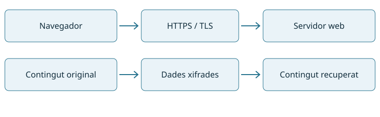
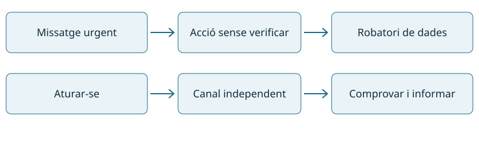
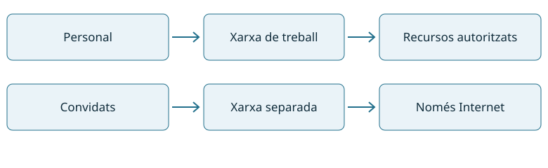
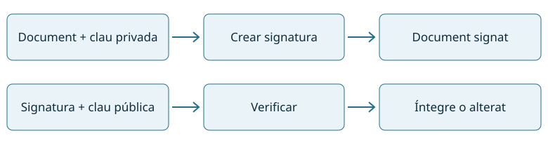
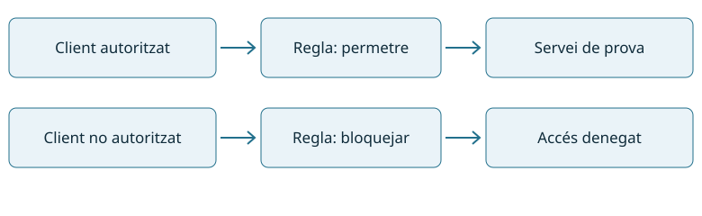

Aprendrem a protegir equips, dades i xarxes, i a comprovar que les mesures funcionen.
99 hAl centre · 3 hores setmanals
33 hEstada a l’empresa
5 RAResultats d’aprenentatge
Què és un RA?
Un resultat d’aprenentatge descriu què has de saber fer al final d’una part del mòdul. Els criteris d’avaluació indiquen com ho comprovaràs: explicar una decisió, configurar una mesura i aportar evidències.
Combinarem explicacions breus, casos d’una petita empresa i pràctiques amb màquines virtuals. Treballarem individualment i en parella; cadascú haurà de poder explicar i demostrar el que ha fet.
De la situació real a una protecció comprovada
Moodle serà el punt de lliurament de tasques i consulta de qualificacions. Aquest web recull els apunts i les activitats. Utilitzarem dades i comptes de prova, i captures sense contrasenyes ni informació personal.
Com s’avalua?
Cada RA combina 20% d’exercicis, 70% de prova i 10% de graella d’observació i resum. Hi ha condicions d’entrega i notes mínimes: consulta la programació i avaluació.
L’ordre de treball previst és RA1 → RA2 → RA5 → RA3 → RA4.
M0226 · Seguretat informàtica
Programació i avaluació
Guia de funcionament i avaluació del curs 2026–2027, basada en la programació facilitada pel professorat.
Ordre de realització del mòdul: RA1 → RA2 → RA5 → RA3 → RA4.
Distribució del mòdul
RA
Contingut
Hores al centre
RA1
Seguretat passiva
18
RA2
Emmagatzematge i còpies de seguretat
20
RA3
Seguretat activa
18
RA4
Seguretat i privacitat en xarxes
31
RA5
Legislació i protecció de dades
12
Total: 99 hores al centre + 33 hores a l’empresa = 132 hores.
Resultats d’aprenentatge, criteris d’avaluació i continguts
Selecciona un RA per consultar-ne el nom complet, els criteris d’avaluació i els continguts. Es mostra un RA cada vegada.
RA1. Aplica mesures de seguretat passiva en sistemes informàtics descrivint característiques d'entorns i relacionant-les amb les seves necessitats.
Criteris d’avaluació
1.a Valora la importància de mantenir la informació segura.
1.b Descriu les diferències entre seguretat física i lògica.
1.c Defineix les característiques de la ubicació física i condicions ambientals dels equips i servidors.
1.d Identifica la necessitat de protegir físicament els sistemes informàtics.
1.e Verifica el funcionament dels sistemes d'alimentació ininterrompuda.
1.f Selecciona els punts d'aplicació dels sistemes d'alimentació ininterrompuda.
1.g Esquematitza les característiques d'una política de seguretat basada en llistes de control d'accés.
1.h Valora la importància d'establir una política de contrasenyes.
1.i Valora els avantatges que suposa la utilització de sistemes biomètrics.
*1.k · Aplica els procediments establerts en la competència digital A4C1 (4.1 Protegir els dispositius) utilitzant els equipaments, eines i aplicacions informàtiques adients, amb criteris de qualitat.
*1.l · Aplica els procediments establerts en la competència digital A4C2 (4.2 Protegir les dades personals i la privacitat) utilitzant els equipaments, eines i aplicacions informàtiques adients, amb criteris de qualitat.
Continguts
1.Aplicació de mesures de seguretat passiva:
1.1 Ubicació física i condicions ambientals dels equips i servidors.
1.2 Protecció física dels sistemes informàtics.
1.3 Els sistemes d’alimentació ininterrompuda.
1.4 Aplicació dels sistemes d’alimentació ininterrompuda.
1.5 Polítiques de seguretat basades en llistes de control d’accés.
1.6 Polítiques de contrasenyes; sistemes biomètrics.
1.7 Mecanismes de seguretat d’accés al sistema.
1.8 Permisos i drets d’usuaris.
1.9 Gestió de l’inventari dels registres d’usuaris, incidències i alarmes.
RA2. Gestiona dispositius d'emmagatzematge descrivint els procediments efectuats i aplicant tècniques per assegurar la integritat de la informació.
Criteris d’avaluació
2.a Interpreta la documentació tècnica relativa a la política d'emmagatzematge.
2.b Té en compte factors inherents a l'emmagatzematge de la informació (rendiment, disponibilitat, accessibilitat, entre d’altres)..
2.c Classifica i enumera els principals mètodes d'emmagatzematge inclosos els sistemes d'emmagatzematge en xarxa.
2.d Descriu les tecnologies d'emmagatzematge redundant i distribuït.
2.e Selecciona estratègies per a la realització de còpies de seguretat.
2.f Té en compte la freqüència i l'esquema de rotació.
2.g Realitza còpies de seguretat amb diferents estratègies.
2.h Identifica les característiques dels mitjans d'emmagatzematge remots i extraïbles.
2.i Utilitza mitjans d'emmagatzematge remots i extraïbles.
2.j Crea i restaura imatges de suport de sistemes en funcionament.
*2.k · Aplica els procediments establerts en la competència digital A3C3 (3.3 Copyright i llicències) utilitzant els equipaments, eines i aplicacions informàtiques adients, amb criteris de qualitat
Continguts
2. Gestió de dispositius d’emmagatzematge
2.1 Emmagatzematge de la informació: paràmetres de configuració, rendiment, disponibilitat, accessibilitat.
2.2 Mètodes d’emmagatzematge locals i en xarxa.
2.3 Tecnologies d’emmagatzematge redundant i distribuït.
2.4 Programació temporal de còpies de seguretat seguint esquemes de rotació.
2.5 Realització de còpies de seguretat seguint diverses estratègies.
2.6 Utilització de suports d’emmagatzematge remots i extraïbles.
2.7 Creació i restauració de còpies de seguretat.
2.8 Aplicació de procediments de mesura de rendiment, de verificació i de detecció d’anomalies.
2.9 Custòdia de suports d’emmagatzematge.
RA3. Aplica mecanismes de seguretat activa descrivint-ne les característiques i relacionant-les amb les necessitats d'ús del sistema informàtic.
Criteris d’avaluació
3.a Segueix plans de contingència per actuar davant fallades de seguretat.
3.b Classifica els principals tipus de programari maliciós.
3.c Realitza actualitzacions periòdiques dels sistemes per a corregir possibles vulnerabilitats.
3.d Verifica l'origen i l'autenticitat de les aplicacions que s'instal·len en els sistemes.
3.e Instal·la, prova i actualitza aplicacions específiques per a la detecció i eliminació de programari maliciós.
3.f Aplica tècniques de recuperació de dades.
*3.g · Aplica els procediments establerts en la competència digital A2C3 (2.3 Compromís ciutadà en tecnologies digitals) utilitzant els equipaments, eines i aplicacions informàtiques adients, amb criteris de qualitat.
Continguts
3. Aplicació de mecanismes de seguretat activa
3.1 Fallades de seguretat: plans de contingència.
3.2 Virus i programes maliciosos.
3.3 Utilització de mecanismes per a la verificació de l’origen i l’autenticitat d’aplicacions.
3.4 Instal·lació, prova, utilització, actualització i automatització d’eines per a la protecció i desinfecció contra programari maliciós.
3.5 Utilització de tècniques de recuperació de dades.
3.6 Sistemes d’identificació: signatura electrònica, certificat digital.
3.7 Obtenció d’identificacions digitals; utilització de signatura electrònica, especialment en documents i de missatgeria electrònica, seguint la documentació que descriu els procediments.
3.8 Interpretació i utilització com a ajuda de documentació tècnica.
3.9 Detecció i resolució d’incidències seguint les instruccions pertinents.
3.10 Documentació de les incidències de seguretat.
RA4. Assegura la privadesa de la informació transmesa en xarxes informàtiques descrivint vulnerabilitats i instal·lant programari específic.
Criteris d’avaluació
4.a Identifica la necessitat d'inventariar i controlar els serveis de xarxa.
4.b Contrasta la incidència de les tècniques d'enginyeria social en els fraus informàtics i robatoris d'informació.
4.c Dedueix la importància de minimitzar el volum de trànsit generat per la publicitat i el correu brossa.
4.d Aplica mesures per evitar el monitoratge de xarxes cablejades.
4.e Classifica i valora les propietats de seguretat dels protocols usats en xarxes sense fils.
4.f Descriu sistemes d'identificació com la signatura electrònica, certificat digital, entre altres.
4.g Utilitza sistemes d'identificació com la signatura electrònica, certificat digital, entre altres.
4.h Instal·la i configura un tallafocs en un equip o servidor.
Continguts
4. Assegurament de la privacitat:
4.1 Mètodes per a assegurar la privacitat de la informació transmesa.
4.2 Fraus informàtics i robatoris d'informació.
4.3 Control del monitoratge en xarxes cablejades.
4.4 Seguretat en xarxes sense fils.
4.5 Sistemes d'identificació: signatura electrònica, certificats digitals i altres.
4.6 Tallafocs en equips i servidors.
RA5. Reconeix la legislació i normativa sobre seguretat i protecció de dades analitzant-ne les repercussions de l’incompliment.
Criteris d’avaluació
5.a Descriu la legislació sobre protecció de dades de caràcter personal.
5.b Determina la necessitat de controlar l'accés a la informació personal emmagatzemada.
5.c Identifica les figures legals que intervenen en el tractament i manteniment dels fitxers de dades.
5.d Contrasta l'obligació de posar a disposició de les persones les dades personals que els concerneixen.
5.e Descriu la legislació actual sobre els serveis de la societat de la informació i comerç electrònic.
5.f Contrasta les normes sobre gestió de seguretat de la informació.
*5.g · Aplica els procediments establerts en la competència digital A2C5 (2.5 Netiquette) utilitzant els equipaments, eines i aplicacions informàtiques adients, amb criteris de qualitat.
*5.h · Aplica els procediments establerts en la competència digital A2C6 (2.6 Gestió de la identitat digital) utilitzant els equipaments, eines i aplicacions informàtiques adients, amb criteris de qualitat.
Continguts
5. Compliment de la legislació i de les normes sobre seguretat:
5.1 Legislació sobre protecció de dades.
5.2 Legislació sobre els serveis de la societat de la informació i correu electrònic.
Aquestes activitats serveixen per avaluar les competències digitals dels alumnes. Els criteris amb * es mantenen dins de cada RA i es recullen també aquí per explicar quin aspecte de la competència digital treballem.
*1.k · Aplica els procediments establerts en la competència digital A4C1 (4.1 Protegir els dispositius) utilitzant els equipaments, eines i aplicacions informàtiques adients, amb criteris de qualitat.
Treballem i avaluem la competència digital 4.1 Protegir els dispositius.
*1.l · Aplica els procediments establerts en la competència digital A4C2 (4.2 Protegir les dades personals i la privacitat) utilitzant els equipaments, eines i aplicacions informàtiques adients, amb criteris de qualitat.
Treballem i avaluem la competència digital 4.2 Protegir les dades personals i la privacitat.
*2.k · Aplica els procediments establerts en la competència digital A3C3 (3.3 Copyright i llicències) utilitzant els equipaments, eines i aplicacions informàtiques adients, amb criteris de qualitat
Treballem i avaluem la competència digital 3.3 Copyright i llicències.
*3.g · Aplica els procediments establerts en la competència digital A2C3 (2.3 Compromís ciutadà en tecnologies digitals) utilitzant els equipaments, eines i aplicacions informàtiques adients, amb criteris de qualitat.
Treballem i avaluem la competència digital 2.3 Compromís ciutadà en tecnologies digitals.
*5.g · Aplica els procediments establerts en la competència digital A2C5 (2.5 Netiquette) utilitzant els equipaments, eines i aplicacions informàtiques adients, amb criteris de qualitat.
Treballem i avaluem la competència digital 2.5 Netiquette.
*5.h · Aplica els procediments establerts en la competència digital A2C6 (2.6 Gestió de la identitat digital) utilitzant els equipaments, eines i aplicacions informàtiques adients, amb criteris de qualitat.
Treballem i avaluem la competència digital 2.6 Gestió de la identitat digital.
Recull de treballs teòrics i pràctics; tots amb el mateix pes dins Pt.
Pe · Prova
70%
Prova escrita o escrita-pràctica del RA.
Gr · Graella i resum
10%
Observació del treball i resum-esquema manuscrit.
Nota del RA = 0,20 × Pt + 0,70 × Pe + 0,10 × Gr
Condicions per aprovar
La nota del RA ha de ser igual o superior a 5.
La prova Pe ha de tenir una nota mínima de 4. Si és inferior, la nota del RA és la mitjana calculada amb un màxim de 4.
Totes les tasques són obligatòries. Si falta qualsevol tasca, la nota màxima del RA és 4.
Els retards injustificats repercuteixen en la graella d’observació.
Resum abans de l’examen
Per poder fer la prova, cal lliurar abans o el mateix dia un resum-esquema fet a mà: com a mínim una cara d’un full i com a màxim les dues cares. El lliurament no implica que es pugui consultar durant l’examen.
Dos exemples de nota
Amb Pt = 8, Pe = 6 i Gr = 7: 1,6 + 4,2 + 0,7 = 6,5, si s’han lliurat totes les tasques. Amb Pt = 9, Pe = 3 i Gr = 9: la mitjana seria 4,8, però la nota queda en 4 perquè Pe és inferior a 4.
Treball propi
Les còpies parcials o totals, inclòs l’ús d’IA sense autorització expressa del docent, fan que l’activitat no se superi, d’acord amb la programació. Cal poder explicar els procediments i els resultats lliurats.
Nota final i nota provisional del mòdul
Nota final del mòdul
Q significa qualificació; Qempresa és la nota de l’estada a l’empresa.
La nota final incorpora els cinc RA i l’estada a l’empresa, que es farà a segon curs. Per superar el mòdul cal tenir tots els RA i l’estada a l’empresa aprovats per separat.
Nota provisional: tots els RA aprovats i pendent de la nota d’empresa
Quan s’han aprovat els cinc RA i encara falta la nota de l’estada a l’empresa de segon curs, es facilita una nota provisional calculada només amb els RA. Els pesos dels RA sumen el 90%; per expressar aquesta nota sobre 10, es multiplica la suma ponderada per 10/9.
Aquesta nota és provisional fins que es disposi de la qualificació de l’estada a l’empresa. Si algun RA està suspès, no es compleix la condició per aplicar aquesta nota provisional.
Exemple: si la nota de cadascun dels cinc RA és 7, la suma ponderada és 6,3 i la nota provisional és 6,3 × 10/9 = 7. Si posteriorment la nota d’empresa és 8, la nota final és 6,3 + 0,10 × 8 = 7,1.
Recuperació · segona convocatòria
Si no se supera el mòdul en primera convocatòria perquè hi ha algun RA suspès, es té dret a una segona convocatòria. Segons la programació, consisteix en una prova per cada RA del mòdul, per tots els RA, i cal superar-los tots.
Treballs previs: requisit per poder fer l’examen
El professor pot encarregar treballs o activitats com a requisit previ per presentar-se a l’examen de recuperació de qualsevol RA. Els comunicarà amb suficient antelació. Si els estableix, és indispensable lliurar-los amb criteris de qualitat i que el docent els validi per poder fer l’examen.
Per tant, quan s’hagin encarregat aquestes tasques prèvies, no n’hi ha prou de presentar-se el dia de la prova: cal haver complert aquest requisit.
La recuperació es farà en el període establert pel centre. En el càlcul de la nota del mòdul es manté la mateixa proporció de notes dels RA que a la convocatòria ordinària.
M0226 · Seguretat informàtica
RA1 · Seguretat passiva
18 hores lectives. La distribució de sessions es consulta a Planificació docent.
Protegir els equips davant d’incidents físics i controlar qui pot accedir al sistema i a la informació.
Què és Taller Bit?
Taller Bit és una petita empresa fictícia de suport informàtic que utilitzarem com a fil conductor. Té sis persones que treballen amb portàtils, comparteixen fitxers en un NAS i es connecten mitjançant un switch i un router. No és un equip ni un programa. Els casos ens ajuden a decidir qui pot veure un document, què cal alimentar amb un SAI i com protegir els dispositius.
En Pau, la Laia i l’Àlex són personatges dels exemples. Quan un exercici canviï equips, persones o consums, ho indicarà expressament.
Què has de saber fer?
Identificar riscos, escollir una ubicació adequada, protegir físicament els equips, seleccionar i verificar un SAI, definir una política d’accés i comprovar permisos, contrasenyes i registres.
Cas conductor: Taller Bit és una empresa fictícia de suport informàtic amb sis persones. Els exemples del RA1 plantegen com protegir-ne els equips i els fitxers. Consulta la presentació del cas.
La seguretat informàtica busca reduir la probabilitat i les conseqüències dels incidents que afecten els equips, els serveis i la informació. Un ordinador pot funcionar perfectament i, alhora, estar exposant documents privats. Per això protegir només el maquinari és insuficient.
La tríada CID
Propietat
Significat
Exemple a Taller Bit
Confidencialitat
Només hi accedeix qui està autoritzat.
Les nòmines només les llegeixen les persones de gestió autoritzades.
Integritat
Les dades es mantenen correctes i els canvis estan autoritzats.
Un pressupost no canvia sense que el responsable ho aprovi.
Disponibilitat
Els usuaris autoritzats poden utilitzar la informació quan la necessiten.
El servidor continua operatiu durant un tall breu de llum.
Un incident pot afectar més d’una propietat. Si algú roba un portàtil sense xifrar, es pot perdre disponibilitat i confidencialitat. Si també modifica arxius abans de retornar-lo, queda afectada la integritat.
Actiu, amenaça, vulnerabilitat i risc
Un actiu és allò que té valor: el NAS, els pressupostos o el servei de facturació. Una amenaça és una possible causa de dany, com un robatori o una fuita d’aigua. Una vulnerabilitat és una feblesa que facilita el dany, com una porta sense pany o un servidor sota una canonada. El risc combina la probabilitat que passi amb l’impacte que tindria.
Una matriu senzilla de probabilitat i impacte ajuda a prioritzar. Assignar valors d’1 a 3 a cada dimensió és una eina didàctica, no una mesura exacta. Cal justificar els valors. Una avaria poc probable però capaç d’aturar tota l’empresa pot exigir una actuació prioritària.
Física/lògica i activa/passiva
La seguretat física actua sobre l’entorn i l’accés material: portes, racks, electricitat i climatització. La seguretat lògica actua sobre l’accés i el tractament digital: comptes, permisos i autenticació.
Activa i passiva descriuen una altra dimensió. En la classificació didàctica habitual, les mesures actives prevenen o detecten atacs, i les passives limiten els danys i faciliten la continuïtat o recuperació. Les classificacions poden variar segons el context. Un SAI és físic i protegeix la continuïtat; una ACL és lògica i preventiva. El currículum d’aquest RA inclou explícitament ACL i contrasenyes dins del bloc de seguretat passiva.
Idea per a classe: «Una porta tancada protegeix el servidor. Què protegeix els fitxers quan l’usuari ja ha iniciat sessió?» Aquesta pregunta connecta les dues AEA.
S3–S5 · Criteris 1.c, 1.d · Continguts 1.1–1.2
02 · Ubicació i protecció física
Un CPD és un espai preparat per allotjar equips que processen o emmagatzemen dades i la infraestructura que els dona servei. En una empresa petita pot ser una sala amb un rack. La mida no elimina la necessitat de controlar l’entorn i les persones que hi entren.
Escollir la ubicació
Primer s’identifiquen riscos de l’edifici: aigua, incendi, accés des del carrer, obres, vibracions i serveis propers. Després es comproven l’alimentació elèctrica, la ventilació, la resistència del terra i l’espai de manteniment. S’eviten zones inundables, pas innecessari de persones i emmagatzematge de materials combustibles. La planta adequada depèn de l’avaluació de l’edifici, no d’una regla universal.
El rack s’ha de situar de manera que es puguin obrir portes, retirar equips i accedir al cablejat. Cal identificar els cables, protegir-los del pas de persones i separar adequadament les canalitzacions de dades i energia. El terra tècnic pot ser útil, però no és imprescindible en qualsevol CPD.
Condicions ambientals
Factor
Risc
Mesura i comprovació
Temperatura
Sobreescalfament i apagades.
Mesurar a l’entrada d’aire dels equips, mantenir ventilació i usar els límits del fabricant.
Humitat
Condensació o descàrregues electroestàtiques.
Monitoratge i control dins del rang dels equips. Evitar canvis bruscos i condensació.
Pols
Filtres obstruïts i pitjor refrigeració.
Neteja planificada, filtres i revisió visual.
Aigua
Curtcircuits i pèrdua de servei.
Evitar conduccions de risc, detectar fuites i elevar equips si l’avaluació ho requereix.
Vibracions i cops
Dany físic o connexions despreses.
Fixació del rack i protecció davant de cops.
Electricitat estàtica
Dany de components durant manipulacions.
Procediment ESD, superfície i polsera adequades quan correspongui.
La temperatura i la humitat s’han de registrar i relacionar amb els manuals. A T1 utilitzarem 22 °C i 45% d’humitat relativa com a dades fictícies d’un cas, no com una exigència normativa. Una única lectura al termòstat no descriu tots els punts calents d’un rack.
En files de racks, els passadissos freds alimenten les entrades d’aire i els calents recullen les sortides. Evitar que l’aire calent torni a l’entrada millora la refrigeració. Els panells de tancament ajuden a controlar el recorregut de l’aire.
Accés físic i emergències
La protecció es pot organitzar per capes: edifici, sala i rack. Es defineixen persones autoritzades, registre de visites, acompanyament de proveïdors i retorn de claus o targetes en les baixes. Cal evitar que una persona entri darrere d’una altra sense identificar-se.
La detecció de fum, els sistemes d’extinció i les sortides d’emergència formen part del pla del centre. Les instal·lacions elèctriques i contra incendis les determina personal competent. En classe s’identifiquen i es documenten, sense obrir quadres ni provar sistemes d’extinció. Cap control d’accés pot impedir l’evacuació segura.
Disponibilitat: afegir redundància redueix alguns punts únics de fallada, però no garanteix disponibilitat absoluta. Dos servidors connectats al mateix endoll continuen compartint un risc elèctric.
Protecció física: cada mesura respon a un risc i necessita una comprovació
S6–S9 · Criteris 1.e, 1.f · Continguts 1.3–1.4
03 · Sistemes d’alimentació ininterrompuda
Un SAI proporciona energia temporal quan falla el subministrament i, segons el disseny, també regula o condiciona l’alimentació. Permet mantenir el servei durant talls breus o apagar els equips de forma ordenada. No substitueix una còpia de seguretat ni protegeix de tots els problemes elèctrics.
La bateria emmagatzema energia en corrent continu. El carregador la recarrega i l’inversor produeix el corrent altern que necessiten els equips. Els indicadors i el programari informen de càrrega, bateria i alarmes. Un bypass, quan existeix, permet una ruta alternativa, amb protecció diferent segons el mode.
Tipus
Funcionament
Aplicació i límit
Offline o standby
Alimenta habitualment des de la xarxa i commuta a bateria quan cal.
Càrregues compatibles amb el temps de commutació indicat pel fabricant.
Línia interactiva
Incorpora regulació de tensió i commuta a bateria quan és necessari.
Petits servidors, xarxa o llocs de treball segons requisits.
Online de doble conversió
Rectifica i torna a generar la sortida en funcionament normal.
Càrregues exigents; en doble conversió no necessita commutar la sortida en passar a bateria. Els modes bypass/ECO s’han d’analitzar a part.
Un SAI online no té necessàriament més autonomia: aquesta depèn de la bateria, la càrrega, l’estat i les condicions de treball. La topologia descriu com funciona, no quants minuts durarà.
Potència: W i VA
FP vol dir factor de potència: FP = P / S. P és la potència activa, en watts (W), i S l’aparent, en voltamperes (VA). Si un equip necessita 100 W i té FP = 0,5, exigeix 200 VA. Amb FP = 1 exigiria 100 VA. El FP no és el rendiment ni el percentatge d’energia perduda: indica la relació entre aquestes dues potències.
Els W expressen potència activa i els VA, potència aparent. En corrent altern monofàsic, amb valors eficaços, S = V × I i P = S × FP. El factor de potència FP és una propietat de la càrrega. No s’ha de deduir simplement de la gamma comercial del SAI.
S (VA) = P (W) / FP P (W) = V × I × FP
Cal comprovar tots dos límits de sortida del SAI. Un model de 1.000 VA i 600 W no admet una càrrega de 700 W encara que la càrrega aparent sigui inferior a 1.000 VA. La potència màxima escrita a una font d’alimentació tampoc és necessàriament el consum real de l’ordinador.
Exemple resolt · AEA1
Situació: sis persones treballen amb portàtils i comparteixen fitxers en un NAS. El NAS és un petit servidor d’emmagatzematge connectat a la xarxa. El switch uneix els equips per cable; el router connecta xarxes i proporciona accés a Internet.
Connexió de dades: el SAI ha d’alimentar els equips necessaris per al servei
Equip real de referència
Característiques i dada disponible
Com interpretem la dada
Synology DS223j
2 badies, 1 port Gigabit. 16,31 W en accés i 4 W en hibernació, segons les condicions de prova del fabricant.
El consum varia amb discs i activitat. La font de 60 W no significa un consum constant de 60 W.
TP-Link Archer AX55
Router Wi-Fi 6. Adaptador de 12 V i 2 A.
12 × 2 = 24 W és la capacitat de sortida de l’adaptador, no una mesura del consum de xarxa.
TP-Link TL-SG108
Switch de 8 ports Gigabit. La fitxa espanyola consultada indica 2,77 W màxim a 220 V / 50 Hz.
Cal comprovar la revisió exacta del model; altres versions poden tenir dades diferents.
Decidim què protegim. NAS, switch i router. Els portàtils utilitzen la seva bateria. Si hi ha una ONT separada (l’equip que termina la fibra), caldrà incloure-la per mantenir la connexió a Internet, i l’operador també haurà de continuar funcionant.
Obtenim el consum. En una instal·lació real mesurem W i VA amb un instrument adequat. Per practicar utilitzem dades simulades, no mesures dels models anteriors: NAS 22 W, router 12 W i switch 3 W. Total: 37 W.
Passem a VA. Donem un FP agregat de 0,65 com a hipòtesi de l’exercici: S = 37 / 0,65 = 56,9 VA.
Deixem marge. Si volem el 30% de capacitat lliure, ocuparem com a màxim el 70%: mínim 37 / 0,70 = 52,9 W i 56,9 / 0,70 = 81,3 VA. Aquest marge és una decisió del cas.
Comprovem autonomia. Un SAI fictici de 650 VA / 360 W supera tots dos mínims. Però no podem afirmar que duri 8 minuts: cal consultar la seva corba d’autonomia a 37 W o verificar-ho. W i VA no són minuts.
Calculadora didàctica de dimensionament. No estima minuts d’autonomia. El marge és una decisió del cas, no una norma universal.
Quins equips hi connectem?
Es prioritza la cadena de servei: servidor, emmagatzematge i elements de xarxa necessaris. Mantenir el servidor però deixar el switch sense alimentació pot fer inaccessible el servei. Una impressora làser pot tenir pics elevats: no es connecta a les sortides de bateria d’un SAI informàtic sense comprovar explícitament la compatibilitat i el dimensionament. Recomanació del fabricant APC.
Autonomia i verificació
La selecció es completa amb la corba d’autonomia del model a la càrrega prevista, els connectors, les comunicacions i el temps d’apagada ordenada. Per exemple, si calen quatre minuts per aturar el servei i es decideix un marge operatiu de tres, l’objectiu del cas és almenys set minuts. No es calcula l’autonomia només amb VA.
La prova comprova estat inicial, càrrega, avís de bateria, continuïtat, ordre d’apagada si correspon i retorn a xarxa. Registrar una prova de tres minuts només acredita que ha suportat aquests tres minuts. No acredita l’autonomia màxima. El manteniment inclou autotests segons manual, alarmes, estat de bateria i substitució autoritzada.
S10 i S12 · Criteris 1.g · Continguts 1.5 i 1.8
04 · Polítiques d’accés, permisos i ACL
Una política d’accés defineix quins subjectes poden fer quines accions sobre quins recursos i qui aprova els canvis. Una ACL és una llista associada a un recurs que concreta permisos per a usuaris o grups. La política s’escriu abans de configurar-la: si no sabem qui necessita llegir una carpeta, una ordre tècnica no resol el problema.
El mínim privilegi consisteix a donar només els permisos necessaris per a la feina. El criteri de partida és no concedir accés fins que existeixi una necessitat autoritzada. Els grups permeten gestionar rols sense repetir permisos per a cada persona. Les altes, canvis de funció i baixes han de revisar aquests permisos.
Grup
Projectes
Facturació
Administració del sistema
Tècnics
Llegir i modificar
Sense accés
No
Gestió
Llegir
Llegir i modificar
No
Administradors
Segons tasca autoritzada
Segons tasca autoritzada
Sí, amb compte específic
Administrar el sistema no implica una autorització organitzativa per consultar qualsevol dada. Les capacitats tècniques elevades exigeixen responsabilitat, traçabilitat i comptes separats per a tasques quotidianes i administratives.
Linux: permisos bàsics
Els permisos POSIX distingeixen propietari, grup i altres. En un fitxer, r permet llegir, w escriure i x executar. En un directori, r permet llistar noms, w modificar les entrades i x travessar-lo o accedir a elements coneguts. Per accedir a un fitxer també cal poder travessar els directoris del camí.
chmod 750 carpeta dona rwx al propietari, r-x al grup i cap permís als altres. chmod 640 fitxer dona rw- al propietari i r-- al grup. chown canvia propietari i, opcionalment, grup. Esborrar un fitxer depèn principalment dels permisos del directori que el conté i d’altres restriccions, no només del permís d’escriptura del fitxer.
ACL POSIX
Una ACL afegeix permisos per a usuaris o grups concrets. La màscara limita els permisos efectius dels usuaris amb nom i dels grups, sense limitar el propietari ni «altres». Una ACL per defecte d’un directori serveix de base als nous elements, amb els límits del mode de creació. No modifica retroactivament els elements existents. Manual Linux d’ACL.
La comprovació final es fa amb el compte destinatari, mai només amb root. Veure una ACL configurada és una evidència parcial: també hem de demostrar una operació permesa i una altra de denegada.
Windows: permisos NTFS
Des de Propietats → Seguretat es consulten usuaris, grups i permisos. «Modificar» i «Control total» no són equivalents: el segon també permet gestionar permisos i propietat. L’herència propaga entrades des de les carpetes pare. Abans de trencar-la, cal entendre quines entrades es mantindran.
Els permisos efectius depenen de totes les pertinences i entrades aplicables. Les denegacions i l’ordre de les entrades poden alterar el resultat; és preferible evitar denegacions innecessàries i verificar amb «Accés efectiu» i una prova real. En un recurs SMB també intervenen els permisos de compartició: l’accés ha de ser possible en les dues capes.
Permís i dret: llegir un fitxer és un permís sobre un objecte. Iniciar sessió localment o fer determinades tasques administratives són drets o privilegis del sistema. Ser capaç d’iniciar sessió no garanteix accés a totes les carpetes.
Exemple resolt · AEA2 · Una carpeta compartida
Al Taller Bit, la Laia consulta els manuals, en Pau els actualitza i l’Àlex administra els permisos. Volem donar a cadascú només l’accés necessari.
Persona / grup
Llegir
Modificar fitxers
Canviar permisos
Laia · Consulta
Sí
No
No
Pau · Edició
Sí
Sí
No
Àlex · Administració
Sí
Sí
Sí
Escrivim la política. Consulta només llegeix; Edició pot treballar amb els fitxers; Administració gestiona l’accés. Una ACL és la llista d’entrades que concreta aquests permisos.
Creem grups i hi assignem comptes. Això evita repetir la política persona per persona. Comprovem que la Laia no pertanyi també al grup Edició.
Apliquem permisos en una carpeta NTFS de prova. A «Seguretat», Consulta rep «Lectura i execució»; Edició, «Modificar»; Administració, «Control total». Conservem SYSTEM i Administradors. Revisem les entrades heretades que podrien donar més accés.
Provem amb cada compte. La Laia obre un manual però no en pot crear ni canviar un. En Pau el pot modificar però no administrar-ne els permisos. L’Àlex pot gestionar els permisos.
Si el resultat no coincideix, revisem. Mirem grups, herència i permisos efectius. Si l’accés és per xarxa, també intervenen els permisos de compartició. Provar-ho com a administrador no demostra què pot fer la Laia.
Evidència: matriu de permisos i una taula amb l’acció, el resultat esperat i el resultat observat. En Linux, r és lectura, w escriptura i x execució; en un directori, x permet travessar-lo. A E4 ho comprovarem amb ordres.
Windows: permisos NTFS i compartició
Els permisos s’assignen a usuaris o grups sobre fitxers i carpetes. Lectura permet consultar el contingut; Modificar permet treballar amb els fitxers i eliminar-los; Control total també permet gestionar-ne els permisos. Un compte editor no necessita control total per editar documents.
Herència i permisos efectius
Una carpeta pot heretar entrades de la carpeta pare. Abans d’afegir permisos revisa les entrades existents i els grups del compte: una altra pertinença pot donar més accés del previst. Les denegacions, les entrades explícites i les heretades influeixen en el resultat. Utilitza la pestanya Accés efectiu i una prova real amb l’usuari, en lloc de deduir-lo d’una sola entrada.
Per accedir per xarxa, s’han de permetre l’operació tant als permisos de compartició com als NTFS. Si la compartició només dona lectura i NTFS dona modificació, l’accés a través d’aquella compartició queda limitat a lectura. L’accés local no passa pels permisos de compartició.
Demostració guiada
En una màquina de laboratori, crea C:\RA1-Lab en un volum NTFS i un fitxer manual.txt. Prepara els grups locals RA1_Consulta i RA1_Edicio, amb comptes de prova diferents.
A Propietats → Seguretat → Opcions avançades, revisa l’herència. Si cal aïllar la carpeta de prova, converteix els permisos heretats en explícits i ajusta només les entrades que donen accés excessiu. Conserva SYSTEM i Administradors.
Assigna «Lectura i execució» a Consulta i «Modificar» a Edició, amb aplicació a aquesta carpeta, subcarpetes i fitxers.
Consulta Accés efectiu per a cada usuari. Si acabes de modificar els grups, inicia una sessió nova amb el compte de prova.
Comprova que el lector pot obrir el fitxer però no desar-hi canvis, i que l’editor pot crear i modificar un fitxer sense administrar els permisos. Fes les proves en sessions no elevades.
Si comparteixes la carpeta, repeteix-les a través de la ruta de xarxa i anota també els permisos de compartició.
Consulta amb icacls
Al símbol del sistema, aquestes ordres mostren les ACL sense modificar-les:
(I) indica una entrada heretada; (OI) i (CI) indiquen herència cap a fitxers i carpetes; F, M i RX són control total, modificació i lectura/execució. Registra la configuració i el resultat observat per a cada compte.
Linux: primer els permisos bàsics, després les ACL
Treballarem amb fitxers de prova de Taller Bit. En Pau redacta informes; el grup ra1equip els consulta. La Laia és una col·laboradora que després necessitarà llegir un informe concret sense formar part del grup.
1 · Propietari, grup i altres
Cada fitxer té un propietari (un usuari) i un grup propietari. Els permisos bàsics distingeixen tres classes. «Altres» no és un grup que haguem de crear.
Classe
Lletra
A qui correspon?
Propietari
u
L’usuari propietari del fitxer.
Grup
g
Els membres del grup propietari, si no són el propietari.
Altres
o
Els usuaris que no encaixen en les dues classes anteriors.
Sense ACL estesa, el sistema selecciona la classe que correspon a l’usuari. Els permisos de les tres classes no se sumen. Un compte pot pertànyer a diversos grups; ho veiem amb id nom_usuari.
2 · Lectura, escriptura i execució
Permís
Valor
En un fitxer
En un directori
r · lectura
4
Llegir-ne el contingut.
Llistar-ne els noms.
w · escriptura
2
Modificar-ne el contingut.
Afegir o eliminar entrades, habitualment amb x.
x · execució
1
Executar-lo si és un programa vàlid.
Travessar-lo i accedir als elements coneguts.
- · absent
0
No concedeix aquell permís.
No concedeix aquell permís.
Per llegir un fitxer cal poder travessar tots els directoris del camí. Esborrar un fitxer depèn principalment dels permisos del directori que el conté, no del permís w del fitxer; hi poden intervenir restriccions com el sticky bit. No cal donar x a un document de text.
Un mode de tres xifres segueix l’ordre propietari / grup / altres. Per exemple, 640 significa rw- / r-- / ---: el propietari llegeix i escriu, el grup només llegeix i els altres no tenen accés.
3 · Preparar el laboratori
Utilitza una VM Linux amb instantània i un compte amb sudo. Els noms següents han de ser nous; si ja existeixen, el docent prepararà un altre prefix. sudo executa una ordre amb privilegis d’administració; sudo -u executa la prova com un altre usuari. A Debian/Ubuntu, si falten getfacl i setfacl, el docent instal·larà el paquet acl.
Hem creat el grup, dos comptes i un fitxer. -aG afegeix un grup suplementari sense substituir els anteriors. El mode 755 del directori de prova permet travessar-lo; aquí preparem l’exemple del fitxer, no una carpeta confidencial completa. Si es canvien els grups d’una sessió ja oberta, cal tornar a iniciar sessió per actualitzar-los.
4 · chown: qui és el propietari?
sudo chown ra1pau:ra1equip /srv/ra1-demo/informe.txt
ls -l /srv/ra1-demo/informe.txt
chown canvia la propietat. Abans dels dos punts hi ha l’usuari; després, el grup. La sortida de ls -l ha de mostrar ra1pau ra1equip en les columnes de propietari i grup. Si volguéssim canviar només el grup, utilitzaríem sudo chown :ra1equip /srv/ra1-demo/informe.txt.
5 · chmod: què pot fer cadascú?
sudo chmod 640 /srv/ra1-demo/informe.txt
ls -l /srv/ra1-demo/informe.txt
El començament serà -rw-r-----. El primer signe indica el tipus: - és un fitxer ordinari; d seria un directori. Després venen tres blocs: rw- per a en Pau, r-- per al grup i --- per als altres.
També podem expressar els canvis amb lletres:
sudo chmod g+w /srv/ra1-demo/informe.txt
# Afegim escriptura al grup: ara és 660.
sudo chmod g-w /srv/ra1-demo/informe.txt
# La retirem: tornem a 640.
+ afegeix i - retira un permís. chmod u=rw,g=r,o= fitxer fixa els permisos de les tres classes. chmod no canvia el propietari; chown no substitueix la política de permisos.
En Pau pot llegir i afegir text. La Laia rep «Permís denegat»: no és propietària ni membre de ra1equip i «altres» té 0. Fem la redirecció dins de sh -c perquè també s’executi amb la identitat que volem provar.
7 · getfacl: consultar la llista de control d’accés
Ara la Laia necessita llegir només aquest informe. Donar lectura a «altres» l’obriria a més persones; afegir-la al grup podria donar-li accés a altres recursos. Una ACL permet afegir una entrada específica.
getfacl /srv/ra1-demo/informe.txt
Abans d’afegir entrades, la part de permisos mostra:
user::rw-
group::r--
other::---
user:: és el propietari; group::, el grup propietari; other::, els altres. getfacl consulta els permisos; no els modifica. El nom de l’ordre acaba en facl.
La màscara limita els permisos efectius dels usuaris amb nom i de les entrades de grup. No limita el propietari ni «altres». Aquí permet lectura. Amb ACL estesa, els bits de grup de ls -l representen la màscara i apareix un +: per interpretar el detall cal getfacl.
La Laia torna a tenir l’accés denegat. Amb ACL estesa, chmod sobre els bits de grup també pot canviar la màscara. No apliquis chmod sense tornar a revisar getfacl.
Fitxers nous: una ACL aplicada a un fitxer no s’estén automàticament als futurs fitxers. Les ACL per defecte s’estableixen en directoris; el setgid d’un directori permet heretar-ne el grup. Són mecanismes diferents. A la pràctica E4 es treballa amb ACL de fitxers existents.
Temps del RA1: els passos són una demostració de referència per a S10–S12 i la pràctica E4. L’ampliació és opcional; no s’afegeixen hores a les 18 previstes.
S11 · Criteris 1.g · Contingut 1.7
05 · Identificació, autenticació i autorització
Identificar-se és declarar qui ets: escriure un nom d’usuari. Autenticar-se és aportar una prova que el sistema accepta per verificar aquesta identitat. Autoritzar és decidir quines accions et permet el sistema després. Finalment, el registre d’activitat permet revisar què ha passat.
La Jana introdueix «jana.gestio», completa la comprovació d’accés i obre el servidor. El sistema li permet consultar factures però denega canviar-ne els permisos. Ha superat l’autenticació i una acció concreta ha estat denegada per autorització.
La sessió també s’ha de protegir
Un equip desbloquejat pot permetre actuar amb una identitat ja autenticada. El bloqueig de pantalla, la protecció del dispositiu i el tancament de sessions compartides són mesures complementàries. També cal donar de baixa sessions i credencials quan una persona deixa de tenir accés.
Un mecanisme de recuperació feble pot anul·lar un bon sistema d’accés. La recuperació necessita verificació adequada i codis custodiats. Les preguntes basades en dades personals fàcils d’esbrinar no ofereixen una prova forta.
Exemple d’entrada a una carpeta del centre
S13 · Criteris 1.h · Contingut 1.6
06 · Política de contrasenyes
Una política descriu com es creen, utilitzen, recuperen i substitueixen les contrasenyes. Ha de ser aplicable i comprovable. Les contrasenyes úniques redueixen l’efecte d’una filtració en un altre servei, i una longitud suficient dificulta l’endevinació.
Com a referència tècnica, NIST SP 800-63B-4 exigeix almenys 15 caràcters quan la contrasenya és l’únic factor, admet un mínim de 8 quan forma part d’MFA, desaconsella regles de composició i no estableix canvis periòdics obligatoris sense indicis de compromís. Demana rebutjar contrasenyes comunes o compromeses. És una guia tècnica, no una obligació legal general per al centre. NIST, apartat de contrasenyes.
Proposta didàctica per a Taller Bit
Contrasenyes llargues i úniques, gestionades amb un gestor aprovat. Objectiu de 15 caràcters o més per als comptes basats en contrasenya.
MFA quan el servei ho permeti, especialment en accessos sensibles.
Canvi immediat davant d’exposició o sospita fundada. La caducitat periòdica només s’aplica quan la política vigent la justifica.
Limitació d’intents i recuperació controlada. Evitar bloquejos que provoquin una denegació de servei fàcil.
Prohibició de compartir comptes i d’incloure secrets en captures o incidències.
Configuració en Windows
En un domini de laboratori, la política de comptes del domini s’estableix amb l’abast adequat, normalment a l’arrel del domini. Una GPO de contrasenyes vinculada només a una unitat organitzativa d’usuaris no defineix per si sola la política de contrasenyes dels seus comptes de domini. Les polítiques granulars són un mecanisme específic diferent.
Es revisen longitud mínima, historial, antiguitat i bloqueig. La capacitat d’exigir més de 14 caràcters pot dependre de la versió i de la configuració addicional. El docent ha de preparar i verificar la imatge. Es documenta qualsevol limitació en lloc de presentar un valor no aplicat com si ho estigués.
Referències de Microsoft: abast de la política de domini i límits de longitud segons la versió. La GPO bàsica no resol tots els controls de la política: per exemple, el rebuig de contrasenyes filtrades pot requerir una capacitat addicional. La comprovació usa un compte de prova i l’eina de consulta de política efectiva, a més d’un canvi de contrasenya controlat.
Com s’emmagatzemen?
Un servei ben dissenyat no hauria de guardar contrasenyes en text pla. Utilitza mecanismes de derivació i verificació amb sal i cost adequats. Un hash és un resum, no un «xifrat que després es desxifra». En aquest RA n’hi ha prou amb entendre la distinció; els algorismes es poden ampliar en un altre bloc.
S14–S16 · Criteris 1.i · Continguts 1.6–1.7
07 · Biometria i autenticació multifactor
La biometria utilitza característiques fisiològiques o de comportament per comparar una mostra amb un patró. Les empremtes, el rostre i l’iris són exemples. Durant l’alta es crea una plantilla; durant la verificació es compara una nova mostra amb la referència. Una verificació 1:1 i una identificació contra moltes persones 1:N són operacions diferents.
Pot facilitar l’ús i reduir la necessitat de recordar secrets. També presenta limitacions: errors, lesions, canvis ambientals, possibilitats de suplantació i dificultat de substitució si es compromet la característica. Una mostra no coincident significa que la verificació ha fallat, no que la persona hagi estat autenticada.
Mesura
Interpretació
Exemple didàctic
FAR · falsa acceptació
Proporció d’intents d’impostors acceptats.
2 acceptats de 2.000 intents d’impostor: 0,1%.
FRR · fals rebuig
Proporció d’intents legítims rebutjats.
15 rebutjats de 500 intents legítims: 3%.
Fer més exigent el llindar acostuma a reduir falses acceptacions i pot augmentar falsos rebutjos. Les taxes s’han d’interpretar amb les condicions de la prova i no com una garantia en qualsevol entorn.
Privacitat
Les dades biomètriques tractades per identificar unívocament una persona tenen protecció especial. La guia de l’AEPD sobre control de presència exigeix analitzar legitimació, necessitat i proporcionalitat, amb avaluació d’impacte prèvia. El consentiment signat no és una solució automàtica, especialment en l’entorn laboral. Cal valorar alternatives menys intrusives. Guia de l’AEPD.
A classe treballem amb dades fictícies i casos. No recollim empremtes ni plantilles facials de l’alumnat. La valoració dels avantatges de la biometria ha d’incloure també accessibilitat, errors i privacitat.
Factors d’autenticació
Factor
Exemple
Allò que saps
Una contrasenya o un PIN.
Allò que tens
Una clau de seguretat o un dispositiu amb un autenticador.
Allò que ets
Una característica biomètrica.
MFA combina factors de categories diferents. Contrasenya i PIN són dos secrets del mateix tipus i no constitueixen dos factors diferents. Un codi temporal generat per un autenticador prova la possessió del dispositiu o del secret associat. Les claus de seguretat i algunes solucions de passkeys aporten resistència al phishing, segons implementació.
Activar MFA no elimina tots els riscos: la recuperació del compte, el dispositiu, les sessions i els enganys continuen sent rellevants. En la pràctica cal demostrar una nova autenticació, i no limitar-se a mostrar que el menú diu «activat».
Contingut 1.9 · Registres, incidències i alarmes
08 · Inventari, incidències i alarmes
L’inventari de comptes respon qui té accés, per què i fins quan. Els registres d’activitat documenten esdeveniments. Una alarma assenyala una condició que cal revisar. Una incidència és una situació que requereix gestió. Un avís o un inici de sessió fallit no prova per si sol que existeixi un atac.
Document
Camps mínims del cas
Inventari de comptes
Identificador, responsable, rol, estat, data d’alta, revisió i data de baixa prevista. No conté contrasenyes.
Registre d’esdeveniments
Data i hora amb zona, equip, compte, origen, acció, resultat i identificador.
Fitxa d’incidència
ID, detecció, fets, impacte, prioritat, responsable, actuacions, evidències, estat i verificació de tancament.
El cicle de vida del compte inclou alta aprovada, assignació a grups, revisió periòdica, canvi de rol i baixa. Un compte inactiu amb privilegis pot mantenir una porta d’accés. La retirada de permisos s’ha de provar, sense eliminar precipitadament evidències o dades que el centre hagi de conservar.
Windows i Linux
El visor d’esdeveniments de Windows organitza els registres per canals. Amb l’auditoria adequada, el registre de Seguretat pot mostrar l’esdeveniment 4625, corresponent a un inici de sessió fallit. S’han d’interpretar compte, hora, tipus d’inici i causa, i comparar-los amb l’activitat esperada. Documentació de Microsoft.
A Linux, els registres depenen de la distribució i dels serveis instal·lats. Es poden consultar amb journalctl o en fitxers de /var/log. /var/log/auth.log no existeix en totes les instal·lacions. Si un servei no està instal·lat o no registra l’esdeveniment, el filtre pot no retornar res.
Resposta ordenada
Primer es recullen els fets i es confirma l’abast. Després es determina la prioritat segons impacte i urgència i s’aplica el procediment autoritzat. Finalment es comprova la recuperació i es documenta el tancament. No s’esborren registres per «netejar l’error» ni es dona per resolt només perquè ha desaparegut una alarma.
A4C1: comprovar actualitzacions, bloqueig de pantalla, compte de treball sense privilegis innecessaris i proteccions del dispositiu. A4C2: limitar accés a les dades, minimitzar els camps registrats, ocultar informació personal de les evidències i compartir-les només amb les persones autoritzades. El termini de conservació s’ajusta a la política i finalitat, sense inventar un nombre universal de dies.
Laboratori i treball a classe
Aplicar, comprovar, explicar.
Tres pràctiques avaluables i sis exercicis integrats en les sessions. Els temps formen part del calendari, no s’afegeixen a les 18 hores.
Encàrrec: ubicar un rack amb servidor, NAS, switch i SAI per a una empresa de sis persones. Cal poder fer manteniment sense interrompre el pas ni exposar els equips a visites.
Dades del cas fictici
Sala
Característiques
A · Soterrani, 12 m²
Hi passa una canonada i hi ha antecedents de filtracions. Porta amb pany.
B · Interior, 10 m²
22 °C i 45% HR en la lectura inicial. Climatització, porta amb pany, cap conducció d’aigua visible. Cal comprovar potència elèctrica i resistència del terra.
C · Recepció, 16 m²
Vidriera amb sol de tarda, accés de visitants i sense climatització pròpia.
Guió
5 min: llegiu l’encàrrec i repartiu disseny i registre.
10 min: compareu les tres sales amb quatre riscos justificats. Escolliu-ne una i indiqueu què queda pendent de verificar.
15 min: dibuixeu una planta amb rack, accés de manteniment, circulació de l’aire, entrada elèctrica i cablejat. No cal un plànol constructiu.
15 min: proposeu sis mesures amb risc cobert, responsable i forma de comprovació. Incloeu accés, aigua, foc, temperatura i cablejat.
10 min: defenseu la decisió davant d’una altra parella i anoteu una millora.
5 min: lliureu plànol i informe d’una o dues pàgines.
Evidència: comparació de sales, planta llegible i taula de mesures. No cal fotografiar instal·lacions sensibles del centre.
Criteri de correcció
Punts
Ubicació justificada i comprovacions pendents
3
Entorn, aire i espai de manteniment
3
Protecció física i procediment d’accés
3
Claredat de l’informe
1
T2 · S8 · 60 min · Parelles amb verificació individual · Criteris 1.e, 1.f
Comprovació controlada d’un SAI
Objectiu: demostrar que el SAI alimenta una càrrega autoritzada durant una interrupció de prova i que els avisos i el retorn a xarxa funcionen.
Material: SAI i manual concret, bateria carregada, equip de prova amb dades fictícies, rellotge, programari de gestió i fitxa de càrrega. El docent ha comprovat compatibilitat, presa de terra i estat.
Procediment supervisat. No obriu el SAI, no manipuleu bateries ni quadres elèctrics i no interrompeu equips del centre en servei. Preferiu l’autotest o el procediment de tall previst pel fabricant i executat pel docent preservant la protecció de terra. Si no hi ha condicions adequades, feu anàlisi de registres i deixeu pendent la comprovació real del Criteri 1.e.
10 min: identifiqueu model, W/VA, topologia, càrrega i sortides de bateria. Registreu l’estat inicial i el criteri d’aturada acordat.
30 min: amb el docent, executeu la prova prevista al manual. Anoteu inici, avís de bateria i funcionament de la càrrega. Atureu la prova en el límit acordat, davant d’alarma anòmala o segons el manual. Proveu l’apagada ordenada només si la càrrega i l’entorn de laboratori ho permeten.
15 min: compareu el resultat amb l’objectiu. Cada alumne identifica una alarma, interpreta una lectura i justifica una decisió.
5 min: confirmeu retorn a xarxa, absència d’alarmes i càrrega de bateria. Deixeu l’equip en estat segur.
Camp de registre
Què cal escriure
Model i càrrega
Model, límits W/VA, dispositius i consum mesurat o estimat identificat.
Inici i final
Hora i motiu de finalització; distingiu temps de suport observat i autonomia màxima.
Avisos i servei
Alarma detectada, estat del sistema i incidències.
Retorn
Xarxa restablerta, bateria carregant i servei disponible.
Conclusió
Objectiu assolit o pendent i limitacions de la prova.
Sense prou SAIs: feu estacions rotatives. Mentre una parella verifica el dispositiu, les altres interpreten un registre. La planificació docent ha de preveure la comprovació individual dins les 18 hores.Sense prou SAIs: feu estacions rotatives. Mentre una parella verifica el dispositiu, les altres interpreten un registre. La sessió 20 proposada permet completar evidències individuals pendents.
Criteri de correcció
Punts
Preparació, selecció de càrrega i seguretat
3
Comprovació observada i interpretació d’avisos
4
Mesures i conclusió sense sobreestimar autonomia
2
Restitució i registre final
1
T3 · S16 · 60 min · Individual amb suport per parelles · Criteris 1.g, 1.i
MFA i comprovació de permisos
Objectiu: activar un segon factor en un servei real amb compte de prova autoritzat, verificar l’accés i demostrar que el mínim privilegi es compleix a Windows i Linux.
Preparació prèvia: a S15 el docent deixa els comptes de prova operatius i comprova que el servei admet un autenticador o clau compatible. Es reutilitzen les màquines i carpetes d’E4. No es requereix cap compra ni compte personal de l’alumnat.
5 min: comproveu el bloqueig de pantalla, les actualitzacions i el compte de treball. Anoteu l’estat sense inventar configuracions.
20 min: al servei escollit pel docent, entreu a Seguretat → Autenticació en dos passos o equivalent. Vinculeu l’autenticador, confirmeu un codi i custodieu els codis de recuperació en l’espai autoritzat. Tanqueu sessió i feu una autenticació nova per comprovar el segon factor. No filmeu ni compartiu secrets.
25 min: a Linux i Windows, amb el compte de lectura d’E4, obriu el fitxer permès i intenteu crear un fitxer a la carpeta protegida. Ha de poder llegir i no escriure. Amb el compte editor, comproveu que pot crear un fitxer. Si falla, identifiqueu la causa i repetiu la prova després de corregir-la.
10 min: lliureu la matriu prevista i real, evidències sense secrets i una explicació de quins factors s’han utilitzat. Expliqueu en quin cas la biometria podria desbloquejar un autenticador i quina alternativa caldria oferir.
Lliurament: una captura retallada de MFA activat, confirmació de la nova autenticació observada pel docent, quatre resultats de lectura/escriptura com a mínim (dos per sistema), comprovació del compte editor i una nota de privacitat. Els codis de recuperació no es lliuren.
Si el servei falla: feu la demostració docent amb el compte de prova preparat i documenteu el bloqueig. La configuració individual pendent es completa a una comprovació acordada amb el docent. No es presenta la demostració com a activació individual realitzada.
Criteri de correcció
Punts
MFA configurat i autenticació nova comprovada
3
Permisos efectius contrastats als dos sistemes
4
Interpretació dels factors d’autenticació
1
Justificació del mínim privilegi i qualitat de les evidències
2
E1 · S1–S2 · 20 min per sessió
Conceptes i classificació
S1: per a cada cas identifiqueu actiu, amenaça, vulnerabilitat i propietat CID afectada: (a) portàtil amb dades sense xifrar robat d’un cotxe, (b) pressupost modificat per un compte compartit, (c) servidor apagat per un tall, (d) carpeta de nòmines compartida amb tothom. Proposeu una mesura i un risc residual.
S2: classifiqueu com a física o lògica: rack tancat, ACL, sensor de fuita, MFA, SAI, bloqueig de pantalla, permisos NTFS i ventilació. Expliqueu per què física/lògica no és el mateix que activa/passiva.
E2 · S7 · 35 min de treball + 15 min de correcció
Dimensionament i elecció del SAI
Cas fictici de consolidació, diferent de l’exemple resolt: els consums i les autonomies següents són dades donades per calcular, no característiques dels equips comercials citats als apunts.
La càrrega és servidor 250 W + NAS 60 W + switch 30 W + router 15 W. FP agregat = 0,90, hipòtesi del problema. Cal deixar lliure el 30% de la capacitat nominal i mantenir el servei durant almenys 7 minuts.
Model fictici
Capacitat
Autonomia a 355 W, dada facilitada
A
650 VA / 360 W
4 min
B
1.000 VA / 600 W
9 min
C
1.500 VA / 900 W
16 min
Calculeu W i VA totals i els dos mínims de selecció.
Determineu quin és el model mínim suficient. Justifiqueu el rebuig o l’acceptació de cada model.
El responsable vol afegir una impressora làser. Quines dades falten i per què no la connectaríeu automàticament?
Una etiqueta diu 230 V i 0,5 A. Quina potència aparent indica? Podeu afirmar els W sense conèixer FP?
Expliqueu què canviaria si el NAS quedés connectat fora del SAI.
E3 · S9 · 35 min de treball + 15 min de correcció
Auditoria ràpida de seguretat física
Situació: rack obert al costat d’una finestra, una entrada d’aire tapada amb caixes, SAI amb avís de bateria, switch fora del SAI, cable travessant la porta i registre de visites buit.
Identifiqueu sis riscos i la propietat CID afectada.
Prioritzeu-los amb probabilitat i impacte d’1 a 3, justificats.
Proposeu una actuació immediata i una de planificada per als tres primers.
Indiqueu quines tasques pot fer l’alumnat amb autorització i quines requereixen manteniment especialitzat.
Prepareu una prova per confirmar cadascuna de les tres correccions.
E4 · S12–S13 · Laboratori preparat pel docent
Permisos Linux, NTFS i política de contrasenyes
S12 · Linux, 25 minuts
Utilitzeu exclusivament una VM de laboratori amb instantània. Si els noms següents ja existeixen, el docent assigna un prefix nou. Els usuaris no necessiten contrasenya per a les proves amb sudo -u. El paquet d’eines ACL ha d’estar preparat.
El 2 de 2770 activa setgid al directori perquè els nous elements heretin el grup. Aquest guió dona l’ACL al fitxer existent i no estableix una ACL per defecte. Registreu els resultats esperats i observats de les tres últimes ordres.
S12 · Windows, 20 minuts
En una VM amb comptes locals de prova ja preparats, creeu C:\RA1\Projecte en un volum NTFS.
Propietats → Seguretat → Opcions avançades: reviseu les entrades heretades. Manteniu SYSTEM i Administradors. Si hi ha accés ampli heretat, convertiu l’herència a entrades explícites en aquesta carpeta de prova i retireu només les entrades àmplies identificades.
Assigneu «Modificar» al compte editor i «Lectura i execució» al lector. Creeu un fitxer de dades fictícies.
Amb cada compte, proveu lectura i creació d’un fitxer. Compareu amb Accés efectiu. No modifiqueu permisos de carpetes del sistema.
Últims 10 min: lliureu matriu de permisos i proves, amb noms ficticis. La preparació inicial ocupa els primers 5 min de la sessió.
S13 · GPO guiada, 30 minuts + 10 de comprovació
Després de 20 minuts de teoria, el docent mostra un domini de laboratori preparat. S’anota la política inicial i es treballa només sobre comptes de prova.
Obriu la consola d’administració de directives de grup. Identifiqueu la política efectiva de comptes de domini abans d’editar.
Localitzeu Configuració de l’ordinador → Directives → Configuració de Windows → Configuració de seguretat → Directives de compte.
Proposeu longitud, historial, caducitat i limitació d’intents. El docent aplica els valors compatibles amb la versió i l’abast de domini.
Comproveu la política amb Get-ADDefaultDomainPasswordPolicy si el mòdul ActiveDirectory està disponible. Per a comptes amb política granular, consulteu també la resultant.
Amb un compte de prova sense política granular, proveu una contrasenya massa curta i una de vàlida, sense revelar-les a l’informe. Registreu resultat i hora. Restaureu la configuració acordada.
Alternativa si no hi ha domini: demostració docent gravada o política local en una edició compatible. Cal indicar que una política local no demostra configuració d’una GPO de domini. No es força un bloqueig que deixi el laboratori sense accés.
E5 · S14 · 20 min + 10 min de debat
Errors biomètrics i proporcionalitat
Un sistema accepta 2 de 2.000 intents d’impostors i rebutja 15 de 500 intents legítims. Calculeu FAR i FRR. Expliqueu què pot passar si es fa més estricte el llindar.
Una empresa vol empremtes per entrar a una oficina on ja funciona una targeta. Indiqueu dos avantatges possibles de la biometria, dos inconvenients i tres preguntes que cal resoldre abans d’implantar-la. Proposeu una alternativa per a qui no pugui utilitzar el sensor.
E6 · Registres · Contingut 1.9
Comptes, registres i informe d’incidència
Després d’una demostració docent de 10 minuts, treballeu en VMs amb dades fictícies. Cal distingir inventari de comptes i registre d’activitat.
10 min: inventarieu els dos comptes d’E4: rol, estat, responsable de prova, data de revisió i accés justificat. Identifiqueu un accés que s’hauria de retirar en una baixa.
10 min: comproveu bloqueig automàtic, compte sense privilegis innecessaris i estat d’actualitzacions. Feu una millora reversible autoritzada, com configurar el bloqueig de pantalla de la VM, i comproveu-la.
15 min: examineu un registre local amb el docent. A Windows, filtreu Seguretat per un esdeveniment 4625 si l’auditoria el genera. A Linux, consulteu journalctl --since "15 minutes ago" amb permisos adequats i localitzeu una acció coneguda. No feu atacs ni repetiu contrasenyes fins a bloquejar comptes.
15 min: redacteu l’informe a partir del conjunt fictici següent i lliureu evidències anonimitzades de la comprovació del dispositiu.
Determineu què és un fet i què és una hipòtesi, quin accés s’ha denegat correctament i què cal investigar. Proposeu prioritat, responsable, actuació i comprovació de tancament. El fitxer fictici és una representació didàctica, no el format literal d’un registre del sistema.
Lliurament: inventari de dos comptes, evidència inicial/final d’una mesura de protecció i fitxa d’incidència sense dades personals ni secrets.
M0226 · Seguretat informàtica
RA1 · Criteris i continguts
La qualificació segueix la programació del mòdul: Pt 20%, Pe 70% i Gr 10%, amb les condicions de lliurament i notes mínimes establertes.
Criteris d’avaluació del mòdul
Criteri
Descripció
Evidència
1.a
Valora la importància de mantenir la informació segura.
E1 i Pe1
1.b
Descriu les diferències entre seguretat física i lògica.
E1 i Pe1
1.c
Defineix les característiques de la ubicació física i condicions ambientals dels equips i servidors.
T1
1.d
Identifica la necessitat de protegir físicament els sistemes informàtics.
T1 i E3
1.e
Verifica el funcionament dels sistemes d'alimentació ininterrompuda.
T2: verificació observada
1.f
Selecciona els punts d'aplicació dels sistemes d'alimentació ininterrompuda.
T2 i E2
1.g
Esquematitza les característiques d'una política de seguretat basada en llistes de control d'accés.
T3 i E4
1.h
Valora la importància d'establir una política de contrasenyes.
E4: política de contrasenyes
1.i
Valora els avantatges que suposa la utilització de sistemes biomètrics.
E5 i reflexió T3
Continguts
Contingut
Descripció
1.1
Ubicació física i condicions ambientals dels equips i servidors.
1.2
Protecció física dels sistemes informàtics.
1.3
Els sistemes d'alimentació ininterrompuda.
1.4
Aplicació dels sistemes d'alimentació ininterrompuda.
1.5
Polítiques de seguretat basades en llistes de control d'accés.
1.6
Polítiques de contrasenyes; sistemes biomètrics.
1.7
Mecanismes de seguretat d'accés al sistema.
1.8
Permisos i drets d'usuaris.
1.9
Gestió de l'inventari dels registres d'usuaris, incidències i alarmes.
Criteris del centre · Activitat independent
Criteri
Descripció
*1.j
Aplica els procediments de la competència digital 4.1 Protegir els dispositius.
*1.k
Aplica els procediments de la competència digital 4.2 Protegir les dades personals i la privacitat.
Consulta les activitats de competència digital: feina autònoma, lliurament separat i validació pròpia. No formen part de la prova del RA ni dels seus pesos.
Origen i criteri editorial
De l’antiga UF1 al RA1.
Adaptació original basada en els deu PowerPoint aportats, el RA i els criteris facilitats i la taula de sessions del docent.
Materials aportats
Arxiu M6UF1.zip: deu presentacions amb atribució interna al professor Carles Franquesa. S’han revisat els textos de les diapositives. La teoria d’aquest espai està reescrita i reorganitzada; no reprodueix les presentacions íntegres.
Material de la UF1
Ús al RA1
h0 · Presentació del mòdul
Només context. S’han substituït les UF i durades antigues pel RA i les 18 hores facilitats.
h1 · Introducció
Fonaments, CID, amenaces i riscos.
h2 · Seguretat física
Entorn, protecció i casos de CPD.
h3 · CPD i SAI
Ubicació, infraestructura i funcionament del SAI.
h4 · SAI (2)
Dimensionament i exercicis, amb càlculs reformulats.
h6 · Encriptació
Només distinció entre xifrat i hash vinculada a la protecció. Criptografia avançada fora del temps nuclear del RA1.
h7 · Biometria
Comparació, errors i privacitat, amb actualització del tractament jurídic.
h8 · Certificats i signatura
Ampliació opcional fora de les 18 hores i de la prova proposada.
h9 · Control d’accés
Subjectes, recursos, matriu, permisos i grups.
h10 · ACL
Pràctiques getfacl/setfacl i verificació de permisos.
Ajustos tècnics rellevants
En corrent altern, V × I dona VA; per obtenir W també cal el factor de potència. La selecció d’un SAI comprova W i VA, i l’autonomia es consulta o es mesura per separat.
Una topologia online no garanteix més autonomia. El temps de commutació s’interpreta segons el mode de funcionament.
Els marges i les condicions ambientals dels exemples són hipòtesis didàctiques. No es presenten com a normes universals.
Un hash no és un xifrat reversible, i una autenticació biomètrica fallida no autentica l’usuari.
La biometria requereix analitzar necessitat, proporcionalitat i legitimació; no n’hi ha prou amb un consentiment signat.
Les ACL es comproven amb el compte destinatari i es tenen en compte els permisos dels directoris pare.
Referència de teoria indicada
El document SMX M6 UF1 · Introducció a la seguretat, a Scribd no ha estat accessible durant la preparació. No s’ha utilitzat com a font llegida ni es pot garantir que aquests apunts reprodueixin el seu estil exacte.
Els criteris, continguts i la distribució base provenen de la taula actual facilitada pel docent. Les eines de laboratori requereixen preparació prèvia. Les antigues UF només són suport.
RA2 · Adaptació de M6Uf2.zip
Apunts elaborats a partir de les cinc presentacions aportades, amb atribució interna al professor Carles Franquesa, curs 2023–2024: h1 Gestió de dispositius; h2 Estratègies d’emmagatzematge; h3 Emmagatzematge local; h4 Emmagatzematge en xarxa; h5 Estratègies en còpies de seguretat. El contingut s’ha reescrit i organitzat segons el RA2 i els criteris facilitats, en 20 hores.
Es mantenen els pesos del mòdul i les 20 hores de la taula actual. La competència A3C3 es valida en una activitat independent del centre.
S’han corregit les classificacions de DAS, NAS i SAN, les generalitzacions sobre capacitat i la confusió entre redundància i còpia. Les particions del mateix disc no ofereixen independència física. La velocitat real s’ha de mesurar i no es dedueix del ping.
La taula actual de RA1 i RA2 facilitada pel docent és la referència principal per al contingut i l’avaluació. Les presentacions de les antigues UF serveixen de suport. RAID 6/10 i GNU tar queden com a ampliació opcional. LVM, mdadm, rsync, cron i Clonezilla formen part del recorregut de la taula actual. Els criteris amb asterisc es treballen independentment del mòdul.
RA3 · Fonts i adaptació
La taula actual de RA3 és prioritària: 18 hores, criteris 3.a–3.f, *3.g independent i continguts 3.1–3.10. El ZIP n6uf3.zip conté set presentacions de Carles Franquesa de l’antiga UF3 de legislació i protecció de dades (cursos 2020–2022). S’han revisat com a context, especialment la documentació d’incidents, però no cobreixen el nucli tècnic del RA3 actual ni en determinen l’avaluació. No es traslladen les referències penals ni les ponderacions antigues.
Els apunts de seguretat activa inclouen documentació de ClamAV, CGSecurity, GnuPG, Thunderbird i INCIBE, enllaçada als blocs corresponents. Les pràctiques requereixen preparar i comprovar prèviament l’entorn de laboratori.
Pots compartir-lo i adaptar-lo, també amb finalitats comercials, reconeixent l’autoria, enllaçant la llicència i indicant els canvis. Conserva les atribucions dels materials de tercers: la llicència del projecte no substitueix les seves condicions.
Model d’atribució: «Adaptat de SMX · Seguretat informàtica, projecte ejgutierrez74, CC BY 4.0. Font: https://github.com/ejgutierrez74/smx-seguretat-informatica. Canvis: [descriu les modificacions]». Les fonts de les presentacions de referència s’identifiquen en aquesta pàgina.
RA4 · Referències i adaptació
Currículum: resultat d’aprenentatge, vuit criteris i sis continguts facilitats pel docent; durada de 31 hores. Referència aportada: M6UF4.zip, amb vuit presentacions de l’antiga UF4 de Carles Franquesa i «Firma Electrónica: Introducción y conceptos básicos», de Tomás García-Merás / atSistemas.
L’antiga UF4 tracta principalment seguretat activa, vinculada al RA3 actual. Per al RA4 s’han aprofitat els conceptes d’identificació, verificació i protecció, amb explicacions noves de xarxes, enginyeria social, Wi-Fi i tallafocs. No es traslladen les eines obsoletes ni les afirmacions jurídiques antigues sobre signatures. Els esquemes RA4 són de creació pròpia; els materials de referència conserven la seva autoria i condicions.
20 hores lectives. La distribució de sessions es consulta a Planificació docent.
Gestiona dispositius d'emmagatzematge descrivint els procediments efectuats i aplicant tècniques per assegurar la integritat de la informació.
Treballarem amb el cas de Taller Bit: una petita empresa que ha de compartir documents i recuperar-los després d’una incidència. Les pràctiques utilitzen dades fictícies i equips o màquines virtuals de laboratori.
Una política d’emmagatzematge defineix quines dades guardem, qui hi accedeix, on es desen, durant quant temps i com les recuperem. Ha d’identificar un responsable i indicar com es comprova que les còpies es poden restaurar. Comprar un disc fiable no resol una eliminació accidental ni una contrasenya compartida.
Factor
Què significa?
Com ho comprovem?
Capacitat
Espai útil per a dades, creixement i versions.
Espai lliure i previsió de creixement.
Rendiment
Velocitat de transferència, operacions per segon i retard.
Mateix conjunt de fitxers, temps i condicions anotades.
Disponibilitat
Poder utilitzar les dades quan cal.
Resposta davant d’una fallada i temps de recuperació.
Accessibilitat
Poder arribar al recurs amb els equips i permisos adequats.
Proves des del client amb el compte destinatari.
Integritat i confidencialitat
Conservar dades correctes i limitar qui les pot consultar.
Hash de referència, restauració i permisos.
Exemple: Taller Bit té 200 GB i preveu créixer 10 GB al mes. En un any tindrà aproximadament 320 GB de dades de treball, abans de comptar còpies i versions. Aquesta xifra no és la capacitat total que cal comprar: s’hi afegeixen la retenció, la redundància i un marge justificat.
Suport i dispositiu
El suport conserva la informació; el dispositiu permet llegir-la i escriure-la. Una cinta és un suport i la unitat de cinta és el dispositiu. En un SSD extern tots dos formen un producte integrat.
HDD: emmagatzematge magnètic amb parts mecàniques. És sensible als cops en funcionament.
SSD: memòria electrònica sense parts mòbils, amb baixa latència. La resistència d’escriptura també importa.
USB i targetes: transport còmodes, amb risc de pèrdua i velocitats variables.
Cinta: adequada per conservar grans còpies, amb accés seqüencial i necessitat de lector.
Disc òptic: útil en alguns arxius o intercanvis, amb capacitat i compatibilitat limitades.
Comparem models concrets segons ús i cost. «SSD» o «HDD» no determina, per si sol, una capacitat o un preu fix.
Continguts 2.2 i 2.6 · Criteris 2.c, 2.h, 2.i
02 · Emmagatzematge local i en xarxa
Model
Accés
Exemple i límit
DAS
Connexió directa a un equip.
Disc SATA o USB. Depèn de l’equip al qual està connectat.
NAS
Fitxers compartits per xarxa, habitualment SMB o NFS.
Carpeta de l’empresa. Necessita xarxa, comptes i permisos.
SAN
Blocs presentats als servidors, per exemple amb iSCSI o Fibre Channel.
Volums per a virtualització. Requereix administració especialitzada.
Remot o núvol
Servei accessible mitjançant una connexió de xarxa.
Repositori extern. Cal valorar ample de banda, recuperació i control dels accessos.
DAS és connexió directa, encara que un servidor pugui compartir després les seves dades. NAS i SAN es distingeixen sobretot pel nivell d’accés, fitxers o blocs. Una SAN pot funcionar amb iSCSI sobre Ethernet; no necessita sempre fibra òptica. La capacitat depèn del disseny concret.
Compartir no és fer una còpia. Un únic fitxer al NAS continua sent una única versió. Si una sincronització propaga un esborrat, pot eliminar també la còpia sincronitzada. Cal historial recuperable i una política de retenció independent.
Accés a un recurs de prova
A Windows, obre la ruta indicada pel docent, per exemple \\servidor-lab\ra2. A Linux amb un gestor compatible, utilitza smb://servidor-lab/ra2. Introdueix un compte de laboratori i prova lectura i escriptura segons el seu rol. Les adreces són exemples i s’han de substituir per les del laboratori.
Un disc extern connectat al mateix ordinador és local i extraïble. Un repositori en una altra ubicació és remot. Un suport desconnectat és offline, i un suport guardat en una altra ubicació és off-site: són propietats diferents.
Particions, sistemes de fitxers i punts de muntatge · 2.2
Un disc és el dispositiu físic o virtual. Una partició en delimita una regió. Un sistema de fitxers, com NTFS o ext4, organitza els fitxers i les seves metadades. A Linux, muntar associa el sistema de fitxers a un directori; a Windows es pot assignar una lletra o un punt de muntatge. Un volum lògic també pot contenir un sistema de fitxers sense correspondre a una partició individual.
lsblk -f
findmnt
df -h
Identifica dispositiu, mida, sistema de fitxers i punt de muntatge. A Windows, compara-ho amb Administració de discos. Distingir espai sense particionar, espai lliure dins del sistema de fitxers i capacitat útil evita decisions incorrectes. NTFS i ext4 permeten gestionar permisos, però no els representen exactament igual.
Contingut 2.3 · Criteris 2.b, 2.d
03 · Redundància i distribució
RAID combina discos en un conjunt lògic. Pot distribuir blocs per augmentar rendiment, duplicar-los o afegir paritat per reconstruir informació. RAID no substitueix una còpia de seguretat: l’esborrat o el xifrat maliciós també poden afectar tot el conjunt.
Nivell
Mínim habitual
Capacitat útil*
Fallades de disc tolerades
RAID 0 · bandes
2
N × S
Cap.
RAID 1 · mirall de dos discos
2
S
1.
RAID 5 · paritat simple
3
(N − 1) × S
1.
*N discos de la mateixa mida S, sense reserves, metadades ni efectes del sistema de fitxers. Taula per a configuracions convencionals.
Exemple resolt: amb quatre discos de 2 TB, RAID 0 ofereix aproximadament 8 TB sense tolerància a fallades i RAID 5 ofereix 6 TB i tolera una fallada. Un mirall RAID 1 de dos discos de 2 TB ofereix 2 TB i tolera la fallada d’un membre. Cal vigilar l’estat i la reconstrucció.Exemple resolt: amb quatre discos de 2 TB, RAID 5 ofereix aproximadament 6 TB i tolera una fallada. RAID 6 ofereix 4 TB i tolera dues fallades. RAID 10 ofereix 4 TB; dues fallades només es toleren si afecten parelles diferents. Durant la reconstrucció pot disminuir el rendiment i cal vigilar els discos restants.
Rèplica i emmagatzematge distribuït
La rèplica manté còpies en diversos nodes. La distribució reparteix dades entre nodes, amb rèpliques o altres mecanismes de protecció segons el sistema. Repartir dades sense redundància no garanteix que continuïn disponibles si un node falla. Separar ubicacions redueix l’exposició a una avaria local, però cal controlar consistència, connexió i retard de replicació.
Un mirall entre particions del mateix disc no protegeix davant de la fallada d’aquell disc. El laboratori virtual serveix per entendre el procediment, però no demostra independència física.
LVM: PV, VG i LV · 2.3
LVM permet administrar l’espai amb volums lògics. Un PV és un dispositiu preparat per a LVM; un VG agrupa l’espai de diversos PV; un LV pren espai del VG i es presenta com un volum utilitzable. Un LV lineal no incorpora redundància per defecte. LVM no equival a RAID ni a emmagatzematge distribuït.
Pràctica guiada: utilitza una VM amb un disc addicional buit d’almenys 3 GiB. El docent ha de confirmar que /dev/sdb és aquest disc: els noms poden canviar. Les ordres de preparació i format destrueixen el contingut del dispositiu seleccionat. No s’executen al disc del sistema.
Explica la relació PV → VG → LV → ext4 → directori de muntatge. Crea un fitxer de prova amb el docent i comprova que es conserva després de desmuntar i tornar a muntar. L’exemple no configura el muntatge automàtic en arrencar.
RAID amb mdadm · 2.3
En una altra VM preparada, utilitza dos discos virtuals buits de la mateixa mida. Confirma amb lsblk que /dev/sdb i /dev/sdc són els discos de pràctica, sense dades ni muntatges. No reutilitzis el disc de LVM sense restablir el laboratori.
Espera que finalitzi la sincronització i comprova els dos membres actius. Compara la mida útil amb la suma de les mides físiques. En una VM diferent o restablerta, repeteix el muntatge amb --level=0 i compara capacitat i tolerància a fallades. No executis les dues creacions consecutives sobre els mateixos discos actius.
Evidència: estat, membres, capacitat i explicació de què es perd si falla un disc en cada nivell. Dos discos virtuals sobre el mateix suport físic no demostren redundància física real. Font local: man mdadm.
Ampliació opcional · RAID 6 i RAID 10
Fora del contingut base de la prova. El nucli de la taula actual és RAID 0, 1 i 5.
Nivell
Mínim
Capacitat
Tolerància
RAID 6 · paritat doble
4
(N − 2) × S
2.
RAID 10 · bandes de miralls
4, nombre parell
(N / 2) × S
Una per parella; perdre una parella completa compromet el conjunt.
Continguts 2.5 i 2.7 · Criteris 2.e, 2.g
04 · Estratègies de còpia
Una còpia de seguretat conserva un estat recuperable. Cal definir què inclou, què exclou i com comprovarem la restauració. Una còpia completa de documents no és necessàriament una imatge arrencable del sistema.
Estratègia
Què desa?
Què cal per restaurar?
Completa
Tot el conjunt seleccionat.
La completa escollida.
Incremental
Canvis des de l’última còpia de la cadena.
La completa inicial i els increments necessaris, segons l’eina.
Diferencial
Canvis des de la completa inicial.
La completa i la diferencial de la data escollida.
Exemple resolt: diumenge es desen 100 GB. Dilluns canvien 5 GB i dimarts canvien 3 GB diferents. Sense compressió, una incremental de dimarts desa aproximadament 3 GB, i una diferencial desa 8 GB. Per recuperar dimarts, la cadena incremental necessita diumenge, dilluns i dimarts. La diferencial necessita diumenge i dimarts. Si un mateix fitxer canvia diversos dies, el càlcul depèn del nivell de còpia, de fitxers o de blocs.
La compressió redueix mida segons les dades. La deduplicació evita desar repetidament contingut igual. El xifrat protegeix la confidencialitat, però obliga a custodiar la clau fora de l’equip que es podria perdre. Cap d’aquestes funcions substitueix la prova de restauració.
rsync: còpia i versions recuperables · 2.5
rsync actualitza un destí transferint els canvis necessaris. Repetir-lo sobre una sola carpeta no conserva un historial. Per retenir versions, crea destins separats; --link-dest reutilitza fitxers que no han canviat mitjançant enllaços durs. El destí ha d’admetre’ls i les versions han de ser al mateix sistema de fitxers.
La restauració mostra «Versio 1». La barra final de l’origen significa copiar-ne el contingut. No editis fitxers directament dins de les versions guardades: els no modificats poden compartir el mateix inode. -a no inclou automàticament ACL ni atributs estesos; quan siguin necessaris, cal valorar -A i -X i la compatibilitat del destí.
En una carpeta nova de laboratori, crea dades de prova i una completa. És un exercici local del procediment; a T6 i a l’exercici de suports també s’utilitza un destí separat.
mkdir -p ~/ra2-lab/dades ~/ra2-lab/copies ~/ra2-lab/restaurat
printf 'Informe de prova\n' > ~/ra2-lab/dades/informe.txt
tar -cf ~/ra2-lab/copies/completa.tar -C ~/ra2-lab/dades .
tar -tf ~/ra2-lab/copies/completa.tar
tar -xf ~/ra2-lab/copies/completa.tar -C ~/ra2-lab/restaurat
sha256sum ~/ra2-lab/dades/informe.txt ~/ra2-lab/restaurat/informe.txt
Els dos resums han de coincidir. Obre també el fitxer. En una còpia real, decideix si cal preservar propietaris, permisos i ACL, i comprova que l’eina i el destí ho permeten.
Contingut 2.4 · Criteris 2.a, 2.e, 2.f
05 · Programació temporal i rotació
RPO és la pèrdua temporal de dades que l’organització accepta. Si es fa una còpia diària, es poden perdre gairebé 24 hores de canvis. RTO és el temps objectiu per recuperar el servei. Una còpia cada hora no garanteix una restauració en una hora.
La finestra de còpia és el període disponible per executar-la sense perjudicar massa el servei. Cal incloure volum, velocitat del destí, xarxa i fitxers oberts. Un calendari sense comprovació d’errors pot fallar durant dies sense que ningú ho detecti.
Proposta per a Taller Bit
Objectius didàctics: RPO de 24 h i RTO de 4 h. Completa cada diumenge a les 20 h i incremental de dilluns a dissabte a les 20 h. Conservar quatre cadenes setmanals i una completa mensual durant sis mesos. Una còpia separada es manté fora de la ubicació i amb accés restringit.
La rotació avi-pare-fill combina còpies mensuals, setmanals i diàries. La retenció s’adapta a les necessitats. No s’elimina la completa base mentre hi hagi increments conservats que en depenguin. La primera còpia del cicle següent s’ha de verificar abans de retirar la cadena anterior.
La regla 3-2-1 proposa tres còpies totals, en dos tipus de suport, amb una fora de la ubicació. Una còpia desconnectada o immutable aporta protecció addicional davant d’alteracions. Cal comprovar-ne la recuperació i els permisos.
Automatització
Configura una tasca amb el Planificador de tasques de Windows o un temporitzador de Linux. Indica compte d’execució, origen, destí, horari i registre. A classe programa-la uns minuts endavant i comprova que s’executa sense una acció manual. Si el destí no és accessible, el registre ha de permetre identificar la fallada.
cron: freqüència i comprovació · 2.4
La tasca de T6 desa una còpia en un directori nou en cada execució. Crea /home/alumne/ra2-backup.sh amb el contingut següent. Substitueix el compte i la ruta per les del laboratori. El volum ext4 de còpies ha d’estar muntat a /mnt/ra2-backup i l’usuari ha de tenir permís d’escriptura.
Dona permís d’execució amb chmod u+x /home/alumne/ra2-backup.sh. Prova-la manualment una vegada i després obre crontab -e. Aquesta línia programa les 20 h diàries:
Els camps són minut, hora, dia del mes, mes i dia de la setmana. A classe programa una execució propera, comprova el registre i restaura un fitxer. Si el suport no està muntat, l’script acaba amb error; no crea una falsa còpia al disc local. L’exemple crea còpies completes independents: la retenció s’ha de gestionar segons el calendari acordat, sense eliminar versions necessàries. Contrasta aquest espai ocupat amb les versions amb --link-dest.
Contingut 2.7 · Criteris 2.j
06 · Imatges i restauració de sistemes
Una imatge conserva els volums necessaris per recuperar un sistema: sistema operatiu, configuració, aplicacions i dades incloses. Una imatge del volum de dades, tota sola, pot no contenir les particions d’arrencada.
Còpia en calent: es crea amb el sistema en funcionament. L’eina necessita un mecanisme de consistència, com VSS a Windows, i suport de les aplicacions quan calgui. Copiar fitxers oberts sense coordinació pot deixar una base de dades inconsistent. Còpia en fred: es fa amb el sistema aturat o des d’un medi de recuperació.
Un punt de restauració de Windows serveix per revertir determinats canvis del sistema. No és una còpia completa dels documents ni substitueix una imatge. Una instantània de màquina virtual tampoc és una còpia independent si depèn dels mateixos discos.
Procediment de laboratori T7
Utilitza una màquina virtual Windows de prova i una eina d’imatge compatible amb VSS, instal·lada i comprovada pel docent. Anota nom, versió i llicència.
Crea un document de referència, calcula’n el hash i identifica totes les particions necessàries per arrencar. Comprova espai i accés al destí separat.
Amb Windows en funcionament, inicia la imatge i revisa el resultat del mecanisme de consistència i del treball. No acceptis com a correcta una còpia amb errors.
Prepara i prova el medi de recuperació. Comprova que veu tant el destí de còpia com el disc virtual de restauració.
Arrenca una màquina virtual de recuperació aïllada i restaura la imatge en un disc virtual buit. Confirma l’origen i el destí abans d’escriure: el disc de destí es sobreescriu.
Arrenca el sistema restaurat. Obre una aplicació i el document, compara el hash i revisa els permisos. Mesura el temps de recuperació i registra qualsevol diferència.
La còpia en calent i la restauració són totes dues evidències del Criteris 2.j. Una pràctica amb Clonezilla en fred pot complementar l’activitat, però no demostra per si sola la creació d’una imatge d’un sistema en funcionament.
La pràctica base crea una imatge d’un sistema que funciona i la restaura en un altre disc. Clonezilla Live treballa amb les particions d’origen desmuntades: és una còpia en fred. Cal distingir-ho de la còpia en calent explicada més amunt.
A la VM, crea un document de prova, calcula’n el hash i comprova que el sistema arrenca. Atura’l de forma ordenada.
Arrenca Clonezilla Live. Escull device-image i el repositori preparat, per exemple local_dev en un segon disc. Comprova capacitat i identifica l’origen.
Escull savedisk, assigna un nom a la imatge i desa el disc del sistema. Revisa la verificació i el resultat final.
En una VM de recuperació aïllada, amb un disc buit de mida igual o superior, arrenca Clonezilla i obre el repositori.
Escull restoredisk, selecciona la imatge i comprova amb el docent el disc de destí abans de confirmar-ne la sobreescriptura.
Arrenca el sistema restaurat, obre el document, compara el hash i registra el temps i les incidències.
Per evidenciar també la creació amb el sistema actiu del criteri 2.j, completa la comprovació guiada de còpia en calent amb l’eina compatible preparada pel docent. La sessió 37 es reserva a completar aquesta evidència i les restauracions pendents.
Continguts 2.8 i 2.9 · Criteris 2.b, 2.g, 2.h, 2.i
07 · Verificació, anomalies i custòdia
«Treball completat» no demostra que la recuperació funcionarà. La verificació combina el registre de l’eina, una comprovació d’integritat i una restauració real. Guarda el hash de referència en una ubicació fiable: un atacant que pugui canviar fitxer i hash pot manipular tots dos.
Comprovació
Procediment
Interpretació
Integritat
SHA-256 abans de copiar i després de restaurar.
Resums iguals indiquen coincidència del contingut comprovat.
Rendiment
Copia el mateix conjunt tres vegades i registra mida, temps i mediana.
Compara amb condicions semblants i anota memòria cau i càrrega.
Salut del suport
Revisa avisos SMART i registres disponibles.
Un avís necessita investigació; absència d’avisos no garanteix que no falli.
Recuperació
Obre fitxers, comprova permisos i prova l’arrencada si és una imatge.
Contrasta amb l’estat esperat i amb l’RTO.
# PowerShell: resum del fitxer restaurat
Get-FileHash -Algorithm SHA256 C:\RA2\restaurat\informe.txt
# Linux: resum del fitxer restaurat
sha256sum ~/ra2-lab/restaurat/informe.txt
Exemple: transferir 2.000 MB en 40 s dona una mitjana de 50 MB/s. Un ping mesura resposta de xarxa, però no mesura aquesta transferència ni el rendiment del disc.
Custòdia dels suports
Registra identificador, contingut general, responsable, ubicació, data i retenció. Xifra els suports transportables quan correspongui, conserva les claus de recuperació separades i prova-les. Expulsa el dispositiu de forma segura, protegeix-lo de cops i controla qui el retira i retorna.
En retirar un suport, aplica el procediment aprovat d’esborrat o destrucció segons tecnologia i sensibilitat. Eliminar un fitxer o formatar ràpidament no equival a un esborrat segur verificat.
M0226 · Seguretat informàtica
Pràctiques RA2
Quatre treballs avaluables, T4–T7, i exercicis guiats integrats en les sessions. Tots els treballs tenen el mateix pes dins Pt. Les activitats amb asterisc tenen lliurament independent a Competència digital del centre.
T4 · Recurs compartit en xarxa
Contingut 2.2 · Criteri 2.c.
Al servidor de laboratori, crea una carpeta amb dades fictícies i comparteix-la amb SMB o NFS segons la imatge preparada.
Defineix els comptes i permisos de lectura i edició. Anota ruta, servidor i protocol.
Accedeix des d’un client amb cada rol i comprova una operació permesa i una de denegada.
Lliura configuració, ruta d’accés i matriu de resultats. Valorem recurs operatiu (4), permisos i comprovacions (4) i informe (2).
T5 · Rendiment i detecció d’anomalies
Contingut 2.8 · Criteri 2.b.
Identifica dispositiu, sistema de fitxers i espai lliure. Copia el mateix conjunt tres vegades, registra mida i temps i calcula velocitat i mediana. Revisa SMART o els avisos disponibles sense fer proves destructives. Explica una limitació de la mesura i com actuaries davant d’un avís.
Lliura taula de mesures, evidència i diagnòstic raonat. Valorem mesures reproduïbles (4), interpretació (4) i registre (2).
T6 · Còpies amb rsync i cron
Continguts 2.4–2.5 · Criteris 2.e, 2.f i 2.g.
Defineix origen, destí, dades incloses, freqüència i retenció.
Segueix el guió de rsync: conserva dues versions amb canvis i restaura l’antiga en una carpeta buida.
Programa i comprova una execució amb cron. Contrasta l’espai de còpies completes amb el de versions amb enllaços durs.
Justifica quan triaries una completa, incremental o diferencial. Documenta la rotació i prova un destí no disponible.
Lliura calendari, registre d’execució i restauració verificada. Valorem estratègia i rotació (3), còpies i automatització (4) i restauració demostrada (3).
T7 · Imatge i restauració amb Clonezilla
Contingut 2.7 · Criteri 2.j.
Segueix el guió de Clonezilla, recupera en un disc virtual buit i comprova arrencada, fitxers i hash. Identifica que aquesta còpia és en fred. Completa la verificació guiada de còpia en calent segons la planificació docent.
Lliura origen/destí, resultat de la imatge, arrencada recuperada i temps de restauració. Valorem preparació i imatge (3), restauració (4) i verificació i distinció calent/fred (3).
Exercicis de classe
Política: interpreta les necessitats de Taller Bit i justifica capacitat, disponibilitat i accés (2.a, 2.b).
LVM i mdadm: segueix els guions de volums i RAID, identifica PV/VG/LV i comprova RAID 0 i 1 (2.d).
Suports: compara un destí remot i un d’extraïble, copia i recupera dades de prova i verifica’n el hash (2.h, 2.i; contingut 2.6).
Custòdia: crea la fitxa d’un suport amb responsable, ubicació, retenció i registre de retirada/retorn (contingut 2.9). Aquesta fitxa no substitueix *2.k.
M0226 · Seguretat informàtica
RA2 · Criteris i continguts
La qualificació segueix la programació del mòdul: Pt 20%, Pe 70% i Gr 10%, amb les condicions de lliurament i notes mínimes establertes.
Criteris d’avaluació del mòdul
Criteri
Descripció
Evidència
2.a
Interpreta la documentació tècnica relativa a la política d'emmagatzematge.
Política de Taller Bit
2.b
Té en compte factors inherents a l'emmagatzematge de la informació (rendiment, disponibilitat, accessibilitat, entre d'altres).
T5 i comparació de dispositius
2.c
Classifica i enumera els principals mètodes d'emmagatzematge, inclosos els sistemes d'emmagatzematge en xarxa.
T4 i classificació local/xarxa
2.d
Descriu les tecnologies d'emmagatzematge redundant i distribuït.
Exercicis LVM i mdadm
2.e
Selecciona estratègies per a la realització de còpies de seguretat.
T6: estratègia justificada
2.f
Té en compte la freqüència i l'esquema de rotació.
T6: calendari de rotació
2.g
Realitza còpies de seguretat amb diferents estratègies.
T6: còpies i restauració
2.h
Identifica les característiques dels mitjans d'emmagatzematge remots i extraïbles.
Comparativa de suports
2.i
Utilitza mitjans d'emmagatzematge remots i extraïbles.
Pràctica de suport remot i extraïble
2.j
Crea i restaura imatges de suport de sistemes en funcionament.
T7: imatge, restauració i comprovació
Continguts
Contingut
Descripció
2.1
Emmagatzematge de la informació: paràmetres de configuració, rendiment, disponibilitat, accessibilitat.
2.2
Mètodes d'emmagatzematge locals i en xarxa.
2.3
Tecnologies d'emmagatzematge redundant i distribuït.
2.4
Programació temporal de còpies de seguretat seguint esquemes de rotació.
2.5
Realització de còpies de seguretat seguint diverses estratègies.
2.6
Utilització de suports d'emmagatzematge remots i extraïbles.
2.7
Creació i restauració de còpies de seguretat.
2.8
Aplicació de procediments de mesura de rendiment, de verificació i de detecció d'anomalies.
2.9
Custòdia de suports d'emmagatzematge.
Criteris del centre · Activitat independent
Criteri
Descripció
*2.k
Aplica els procediments de la competència digital 3.3 Copyright i llicències.
Consulta les activitats de competència digital: feina autònoma, lliurament separat i validació pròpia. No formen part de la prova del RA ni dels seus pesos.
M0226 · Seguretat informàtica
RA3 · Seguretat activa
Aplica mecanismes de seguretat activa descrivint-ne les característiques i relacionant-les amb les necessitats d’ús del sistema informàtic.
A Taller Bit, aprendrem a detectar una incidència, seguir un procediment, recuperar el servei i comprovar el resultat. Treballarem amb màquines virtuals, dades fictícies i mostres inofensives.
El criteri *3.g · A2C3 es treballa amb CD1 · Participació ciutadana, vinculada a AEA7 i amb lliurament independent a Moodle.
M0226 · Seguretat informàtica
RA4 · Seguretat i privacitat en xarxes
Assegura la privadesa de la informació transmesa en xarxes informàtiques descrivint vulnerabilitats i instal·lant programari específic.
31 hores · 1r de CFGM de Sistemes Microinformàtics i Xarxes.
A Taller Bit protegirem comunicacions, revisarem serveis i configurarem Wi-Fi i tallafocs. També aprendrem a reconèixer fraus i a signar i verificar documents. Cada bloc combina explicacions, un esquema visual i una comprovació breu.
Repassa què són una IP, un servei i un port. Les pràctiques es fan amb equips autoritzats, xarxes de laboratori i dades fictícies. Els conceptes de signatura introduïts a RA3 es reprenen aquí amb ús i verificació.
M0226 · Seguretat informàtica
RA5 · Legislació i protecció de dades
Dades personals, privacitat i normativa de serveis i comerç electrònic.
12 hores al centre.
Què treballarem?
Dades personals, privacitat i normativa de serveis i comerç electrònic.
Els apunts i les pràctiques d’aquest RA es publicaran més endavant. Ara treballem el RA1.
M0226 · Seguretat informàtica
Espai del professorat
Planificació diària, orientacions de correcció i model d’examen.
Aquestes activitats serveixen per avaluar les competències digitals dels alumnes en els aspectes que apareixen entre parèntesis als criteris amb *. Cada activitat indica la competència que avaluem i les evidències que cal lliurar.
La competència digital té un registre de valoració separat del contingut del RA. Les AEA indiquen on es vincula l’activitat segons la programació del centre. Els temps són una proposta de treball autònom; el docent indicarà a Moodle el termini i l’espai de lliurament. No s’afegeixen percentatges a la nota del mòdul.
*3.g · Aplica els procediments establerts en la competència digital A2C3 (2.3 Compromís ciutadà en tecnologies digitals) utilitzant els equipaments, eines i aplicacions informàtiques adients, amb criteris de qualitat.
Avaluem la competència digital 2.3 Compromís ciutadà en tecnologies digitals.
Tria una necessitat del barri o del centre, com l’accessibilitat d’un espai. Localitza un canal digital oficial de participació o comunicació ciutadana. Comprova qui el gestiona i prepara una proposta breu, amb una font que sustenti la petició i llenguatge respectuós. No cal publicar-la ni enviar-la.
Lliurament a Moodle: Esborrany de la proposta, enllaç al canal oficial, justificació de la seva adequació i explicació de com s’evita exposar dades personals.
Què es valorarà: Canal fiable i adequat; proposta concreta i fonamentada; ús responsable i accessible de la tecnologia.
CD2 · A2C5 · Comunicació respectuosa
*5.g · Aplica els procediments establerts en la competència digital A2C5 (2.5 Netiquette) utilitzant els equipaments, eines i aplicacions informàtiques adients, amb criteris de qualitat.
Reescriu aquest missatge fictici per a un fòrum de classe: «NO ENTENS RES!!! el teu treball és una merda, espavila». Converteix-lo en una resposta que expliqui el desacord amb respecte i proposi una millora. Redacta també un correu breu per demanar ajuda al professorat amb assumpte, context i una pregunta concreta.
Lliurament a Moodle: Els dos textos, tres normes de netiqueta aplicades i una explicació de com actuaries davant d’una provocació al fòrum. No cal enviar els missatges.
Què es valorarà: Respecte, claredat, adequació al canal i gestió del desacord sense agressions.
CD3 · A2C6 · Identitat digital
*5.h · Aplica els procediments establerts en la competència digital A2C6 (2.6 Gestió de la identitat digital) utilitzant els equipaments, eines i aplicacions informàtiques adients, amb criteris de qualitat.
Avaluem la competència digital 2.6 Gestió de la identitat digital.
Analitza un perfil fictici que publica nom complet, horari habitual, telèfon i fotografies amb ubicació. Classifica què es mostra, a qui i amb quines conseqüències. Dissenya una versió del perfil amb exposició mínima i proposa com separar l’ús personal del professional o acadèmic.
Lliurament a Moodle: Taula de dades i públic destinatari, perfil fictici revisat i pla de revisió d’identitat digital. No cal cercar ni lliurar informació real pròpia o d’altres persones.
Què es valorarà: Identifica la petjada digital, justifica la visibilitat i proposa mesures coherents per gestionar la identitat.
CD4 · A3C3 · Copyright i llicències
*2.k · Aplica els procediments establerts en la competència digital A3C3 (3.3 Copyright i llicències) utilitzant els equipaments, eines i aplicacions informàtiques adients, amb criteris de qualitat
Avaluem la competència digital 3.3 Copyright i llicències.
Vinculació EdC: AEA1. Lliurament i valoració a Moodle.
60 minuts · Individual. Crea una fitxa breu sobre un tema que triïs amb un text propi i un recurs reutilitzable. Localitza l’autoria, la font original i la llicència del recurs. Comprova que permet l’ús previst, redacta l’atribució i explica els canvis. Identifica també la llicència d’una aplicació utilitzada.
Lliurament separat: fitxa final, taula d’autoria/font/llicència/ús permès i evidència de les condicions consultades. Si un recurs no té condicions clares, substitueix-lo i explica la decisió.
Validació: la llicència és verificable, l’ús és compatible i l’atribució és completa. S’avalua la competència digital, no els coneixements de còpies de seguretat.
CD5 · A4C1 · Protegir els dispositius
*1.k · Aplica els procediments establerts en la competència digital A4C1 (4.1 Protegir els dispositius) utilitzant els equipaments, eines i aplicacions informàtiques adients, amb criteris de qualitat.
Avaluem la competència digital 4.1 Protegir els dispositius.
Vinculació EdC: AEA1. Lliurament i valoració a Moodle.
45 minuts · Individual. En un dispositiu de prova o VM, revisa actualitzacions, bloqueig automàtic i ús d’un compte sense privilegis innecessaris. Aplica una millora reversible autoritzada i comprova-la.
Lliurament separat: fitxa inicial/final, dues evidències sense dades personals i explicació del risc reduït. No cal fer canvis en un dispositiu familiar si no es disposa d’autorització; es pot utilitzar la VM del centre.
Validació: identifica l’estat real, aplica la mesura i demostra el resultat. Si manca una evidència, queda pendent de completar.
CD6 · A4C2 · Protegir les dades personals i la privacitat
*1.l · Aplica els procediments establerts en la competència digital A4C2 (4.2 Protegir les dades personals i la privacitat) utilitzant els equipaments, eines i aplicacions informàtiques adients, amb criteris de qualitat.
Avaluem la competència digital 4.2 Protegir les dades personals i la privacitat.
Vinculació EdC: AEA2. Lliurament i valoració a Moodle.
45 minuts · Individual. Prepara un document amb dades fictícies i comparteix-lo en un entorn de prova amb un compte lector. Comprova l’accés autoritzat, retira’l i verifica que deixa de funcionar. Revisa la informació que apareix a les captures abans de lliurar-les.
Lliurament separat: taula de dades necessàries/innecessàries, permisos inicials i finals i evidència de retirada d’accés. No lliuris contrasenyes, codis ni dades reals de tercers.
Validació: aplica minimització, restringeix els destinataris i comprova la retirada de l’accés.
Suport a *2.k · Activitat independent
Guia de consulta · Copyright i llicències
Abans d’incorporar programari, imatges o documents, identifica qui n’és l’autor i què permet la llicència. Poder descarregar un material no implica poder redistribuir-lo. En el dossier anota títol, autoria, font, llicència i canvis fets.
En Creative Commons, BY requereix atribució, SA condiciona la llicència de les adaptacions, NC limita l’ús comercial i ND restringeix la distribució d’adaptacions. Cal consultar la llicència concreta i la seva versió. Les llicències del programari poden tenir altres condicions.
Activitat: selecciona un recurs que puguis reutilitzar, comprova la font original i redacta’n l’atribució. Per a una eina de còpia, identifica l’edició i la llicència aplicable. Si no trobes permís de reutilització, deixa constància de la limitació i utilitza un recurs propi o amb condicions clares.
Proposta de seguiment a Moodle: pendent de lliurament, pendent de completar o evidència validada. El docent aplica la graella i el procediment establerts pel centre. Aquest web no recull lliuraments ni qualificacions.
M0226 · Seguretat informàtica
Planificació docent
Distribució de sessions segons la taula actual facilitada pel docent. Les dates són la base de treball i es poden ajustar. Les activitats de competència digital tenen registre independent.
Base: taula actual facilitada pel docent. Els criteris i continguts actuals delimiten el que s’explica i s’avalua. Les antigues UF només aporten material de suport. Les dates són les de la proposta aportada i es poden ajustar.
Les activitats *1.j, *1.k i *2.k es registren separadament com a competència digital del centre, fora de Pt, Pe i Gr. Proposta de dedicació autònoma: 45 min, 45 min i 60 min respectivament. El centre concretarà terminis i validació.
Correspondències de competència digital
Es conserva la vinculació EdC facilitada: A2C3 → AEA7; A2C5 i A2C6 → AEA5; A3C3 i A4C1 → AEA1; A4C2 → AEA2. La taula de criteris situa copyright a *2.k, però la programació EdC en situa l’activitat a AEA1. Es mantenen les dues referències sense traslladar l’activitat a AEA4. Les activitats i propostes de dedicació són a Avaluació de competències digitals.
RA1 · 18 sessions d’una hora
AEA1: 9 h. AEA2: 9 h, inclosa Pe1.
Sessió
Data i horari
AEA
Criteris
Continguts
Activitat
Desenvolupament
1
15/09/2026 Dimarts 12:30 - 13:30
AEA1
1.a
—
Teoria / Introducció
Presentació del mòdul, objectius i criteris d'avaluació. Concepte de seguretat informàtica: confidencialitat, integritat i disponibilitat (tríada CID). Amenaces, vulnerabilitats i riscos.
2
16/09/2026 Dimecres 11:30 - 12:30
AEA1
1.b
1.1
Teoria
Diferències entre seguretat física i seguretat lògica: àmbits d'aplicació i exemples de cadascuna.
3
18/09/2026 Divendres 11:30 - 12:30
AEA1
1.c
1.1
Teoria
Ubicació física dels equips i servidors: sala CPD, control de condicions ambientals (temperatura, humitat), prevenció d'incendis i inundacions.
4
22/09/2026 Dimarts 12:30 - 13:30
AEA1
1.d
1.2
Teoria / Pràctica
Protecció física dels sistemes informàtics: control d'accés a instal·lacions, cablejat estructurat, racks i seguretat perimetral.
5
23/09/2026 Dimecres 11:30 - 12:30
AEA1
1.c, 1.d
1.1, 1.2
Pràctica T1
Cas pràctic: disseny bàsic d'un CPD (ubicació, climatització i mesures d'accés físic).
6
25/09/2026 Divendres 11:30 - 12:30
AEA1
1.e
1.3
Teoria
Sistemes d'alimentació ininterrompuda (SAI): tipus (online, línia interactiva, offline) i funcionament.
7
29/09/2026 Dimarts 12:30 - 13:30
AEA1
1.e, 1.f
1.4
Pràctica
Selecció dels punts d'aplicació d'un SAI: dimensionament segons la potència i càrrega elèctrica dels equips.
8
30/09/2026 Dimecres 11:30 - 12:30
AEA1
1.e, 1.f
1.3, 1.4
Pràctica T2
Verificació pràctica del funcionament d'un SAI: simulació de tall elèctric i mesura del temps d'autonomia.
9
02/10/2026 Divendres 11:30 - 12:30
AEA1
1.a, 1.b, 1.c, 1.d, 1.e, 1.f
1.1, 1.2, 1.3, 1.4
Pràctica de repàs
Sessió de repàs i consolidació · bloc de seguretat física (ubicació, protecció física i SAI), abans de continuar amb seguretat lògica.
10
06/10/2026 Dimarts 12:30 - 13:30
AEA2
1.g
1.5
Teoria
Polítiques de seguretat basades en llistes de control d'accés (ACL): concepte i aplicació als sistemes de fitxers.
11
07/10/2026 Dimecres 11:30 - 12:30
AEA2
1.g
1.7
Teoria
Identificació, autenticació i autorització: la diferència entre demostrar qui ets (autenticació) i decidir què et deixen fer un cop identificat (autorització).
12
09/10/2026 Divendres 11:30 - 12:30
AEA2
1.g
1.5, 1.7
Pràctica
Configuració de permisos NTFS (Windows) i permisos ext4 (Linux: chmod/chown/setfacl).
13
13/10/2026 Dimarts 12:30 - 13:30
AEA2
1.g, 1.h
1.6, 1.7
Teoria / Pràctica
Polítiques de contrasenyes: robustesa i caducitat; configuració bàsica de directives de grup (GPO) de contrasenyes en un domini Windows.
14
14/10/2026 Dimecres 11:30 - 12:30
AEA2
1.i
1.6
Teoria
Sistemes biomètrics: empremta dactilar, reconeixement facial, iris. Avantatges, inconvenients i taxa d'error (FAR/FRR).
15
16/10/2026 Divendres 11:30 - 12:30
AEA2
1.g, 1.i
1.7
Teoria
Mecanismes de seguretat d'accés al sistema: autenticació multifactor (2FA/MFA) i factors d'autenticació.
16
20/10/2026 Dimarts 12:30 - 13:30
AEA2
1.g, 1.i
1.7, 1.8
Pràctica T3
Configuració de 2FA en un servei real i anàlisi de permisos i drets d'usuaris en Windows/Linux.
17
21/10/2026 Dimecres 11:30 - 12:30
AEA2
—
1.9
Pràctica
Gestió de l'inventari de registres d'usuaris: visor d'esdeveniments (Windows) i /var/log (Linux); detecció d'incidències i alarmes. El contingut 1.9 es treballa al mòdul; *1.j i *1.k tenen activitats independents fora d’aquestes hores.
18
23/10/2026 Divendres 11:30 - 12:30
AEA2
1.a–1.i
1.1, 1.2, 1.3, 1.4, 1.5, 1.6, 1.7, 1.8, 1.9
Pe1 (Prova escrita-pràctica)
Prova escrita-pràctica RA1 · seguretat física i lògica (ubicació, protecció física, SAI, ACL, contrasenyes, biometria, permisos i registres).
RA2 · 20 sessions d’una hora
AEA3: 10 h. AEA4: 10 h, inclosa Pe2.
Sessió
Data i horari
AEA
Criteris
Continguts
Activitat
Desenvolupament
19
27/10/2026 Dimarts 12:30 - 13:30
AEA3
2.a
2.1
Teoria
Introducció a la gestió de dispositius d'emmagatzematge: interpretació de documentació tècnica de la política d'emmagatzematge.
20
28/10/2026 Dimecres 11:30 - 12:30
AEA3
2.b
2.1
Teoria
Factors inherents a l'emmagatzematge: rendiment, disponibilitat i accessibilitat.
21
30/10/2026 Divendres 11:30 - 12:30
AEA3
2.c
2.2
Teoria
Mètodes d'emmagatzematge locals: discs (HDD/SSD), particions i sistemes de fitxers (NTFS, ext4).
22
03/11/2026 Dimarts 12:30 - 13:30
AEA3
2.c
2.2
Teoria
Mètodes d'emmagatzematge en xarxa: conceptes bàsics de NAS i SAN.
23
04/11/2026 Dimecres 11:30 - 12:30
AEA3
2.c
2.2
Pràctica T4
Configuració d'un recurs compartit en xarxa (SMB/NFS) i accés des d'un client.
24
06/11/2026 Divendres 11:30 - 12:30
AEA3
2.d
2.3
Teoria
Tecnologies d'emmagatzematge redundant i distribuït: introducció a RAID (0, 1, 5) i a LVM.
25
10/11/2026 Dimarts 12:30 - 13:30
AEA3
2.d
2.3
Pràctica
Creació d'un volum lògic amb LVM (PV, VG, LV) en Linux.
26
11/11/2026 Dimecres 11:30 - 12:30
AEA3
2.d
2.3
Pràctica
Muntatge d'un RAID bàsic amb mdadm (nivells 0 i 1) i verificació del seu estat.
27
13/11/2026 Divendres 11:30 - 12:30
AEA3
—
2.9
Teoria / Pràctica
Custòdia dels suports d'emmagatzematge: procediments de conservació, etiquetatge i seguretat física. Contingut 2.9 del mòdul; no és l’activitat de copyright de *2.k.
28
17/11/2026 Dimarts 12:30 - 13:30
AEA3
2.b
2.8
Pràctica T5
Mesura del rendiment i verificació d'anomalies en dispositius d'emmagatzematge amb eines bàsiques de monitoratge.
29
18/11/2026 Dimecres 11:30 - 12:30
AEA4
2.e
2.4
Teoria
Estratègies de còpia de seguretat: còpia completa, incremental i diferencial.
30
20/11/2026 Divendres 11:30 - 12:30
AEA4
2.f
2.4
Teoria
Programació temporal de còpies de seguretat: freqüència i esquemes de rotació (Avi-Pare-Fill).
31
24/11/2026 Dimarts 12:30 - 13:30
AEA4
2.g
2.5
Pràctica
Realització de còpies de seguretat amb rsync en Linux (còpia local i incremental).
32
25/11/2026 Dimecres 11:30 - 12:30
AEA4
2.e, 2.f, 2.g
2.4, 2.5
Pràctica T6
Automatització de còpies de seguretat amb rsync i tasques programades (cron): estratègia, freqüència i execució.
33
27/11/2026 Divendres 11:30 - 12:30
AEA4
2.h
2.6
Teoria
Característiques dels mitjans d'emmagatzematge remots i extraïbles: núvol, cintes, discs externs i USB.
34
01/12/2026 Dimarts 12:30 - 13:30
AEA4
2.i
2.6
Pràctica
Utilització de mitjans d'emmagatzematge remots i extraïbles per fer còpies de seguretat.
35
02/12/2026 Dimecres 11:30 - 12:30
AEA4
2.j
2.7
Teoria
Creació i restauració d'imatges de suport de sistemes en funcionament: concepte d'imatge de disc i clonatge.
36
04/12/2026 Divendres 11:30 - 12:30
AEA4
2.j
2.7
Pràctica T7
Creació d'una imatge de sistema amb Clonezilla i restauració en un altre suport.
37
09/12/2026 Dimecres 11:30 - 12:30
AEA4
2.j
2.7
Pràctica / verificació
Completar T7: restauració, arrencada i verificació de la imatge. Comprovació guiada de còpia en calent. L’activitat *2.k es realitza com a treball autònom independent.
38
11/12/2026 Divendres 11:30 - 12:30
AEA4
2.a–2.j
2.1, 2.2, 2.3, 2.4, 2.5, 2.6, 2.7, 2.8, 2.9
Pe2 (Prova escrita-pràctica)
Prova escrita-pràctica RA2 · emmagatzematge i còpies de seguretat.
Un pla de contingència concreta què cal fer si una fallada de seguretat afecta el servei. Identifica responsables, canals d’avís, recursos de recuperació, prioritats i condicions per tornar a treballar. S’ha de poder seguir amb pressa, sense improvisar decisions que empitjorin l’incident.
A Taller Bit, un ordinador mostra un avís de xifrat i deixa d’obrir documents. La primera tasca és comunicar i contenir l’incident segons el pla: no connectar-hi el disc de còpies ni continuar utilitzant-lo. El responsable decideix si s’aïlla de la xarxa, quines evidències es conserven i com es recupera el servei.
Fase
Acció prevista
Evidència
Preparació
Inventari, còpies verificades i contactes.
Versió del pla i responsables.
Detecció
Confirmar símptomes i abast sense atribuir causes sense proves.
Hora, equip i alerta.
Contenció
Limitar la propagació segons instruccions.
Mesura, autorització i resultat.
Resolució
Eliminar la causa o reinstal·lar des d’una font fiable.
Procediment seguit i canvis.
Recuperació
Restaurar, actualitzar i verificar abans de reconnectar.
Proves del servei i autorització de retorn.
Revisió
Documentar què ha fallat i millorar el pla.
Informe i accions de seguiment.
Una alerta no demostra per si sola una infecció. Cal valorar impacte i urgència, i escalar quan l’acció supera les atribucions de l’operador. Font de context: INCIBE · Contingència i continuïtat.
3.2 · Criteri 3.b
02 · Virus i programari maliciós
El malware és programari que actua amb finalitats perjudicials. Classifiquem les mostres segons propagació, funció i comportament; una mateixa amenaça pot encaixar en diverses categories.
Tipus
Característica
Indici que cal contrastar
Virus
S’associa a un fitxer o element hoste i es replica quan s’executa.
Fitxers alterats i deteccions vinculades.
Cuc
Es propaga entre sistemes sense necessitar enganxar-se a un fitxer hoste.
Connexions i propagació anòmales.
Troià
Es presenta com a programari útil o legítim.
Accions ocultes després de la instal·lació.
Ransomware
Bloqueja o xifra informació per exigir un rescat; pot anar acompanyat de robatori de dades.
Documents inaccessibles i nota de rescat.
Spyware
Recull informació sense una autorització adequada.
Captura o enviament de dades no justificat.
Adware
Mostra publicitat; segons el comportament pot ser intrusiu o no desitjat.
Redireccions i anuncis persistents.
El phishing és una tècnica d’engany, no una família de programa. Pot servir per distribuir un troià. «Equip lent» tampoc identifica un virus: pot haver-hi falta d’espai o una aplicació legítima consumint recursos.
T10 · Anàlisi de comportament
Treballarem amb informes de sandbox, captures i registres preparats pel docent, sense executar malware real. Per a cada cas identifica vector d’entrada, accions observades, categoria probable, impacte i informació que falta. Separa sempre observació i hipòtesi.
Cas resolt: una aplicació que es presenta com a visor de documents envia fitxers sense informar l’usuari. El disfressament suggereix un troià; l’enviament apunta a sostracció d’informació. Cal analitzar destinació i dades transmeses abans de concloure l’abast.
3.4 i 3.8 · Criteri 3.c
03 · Actualitzacions i vulnerabilitats
Una vulnerabilitat és una debilitat que es pot aprofitar. Un pedaç pot corregir-la, però cal verificar que s’ha instal·lat i que el servei continua funcionant. Actualitzar la llista de paquets no és el mateix que actualitzar els programes.
Inventaria versió del sistema i aplicacions rellevants.
Consulta l’avís del fabricant, versions afectades, requisits i possibles reinicis.
Prepara recuperació i prova el canvi a la VM autoritzada.
Aplica l’actualització en la finestra prevista.
Comprova versió final, reinicis pendents i funcionament. Registra els errors.
Linux Debian/Ubuntu de laboratori
sudo apt update
apt list --upgradable
sudo apt upgrade
Revisa la proposta abans de confirmar. No apliquis ordres d’actualització massiva a equips de producció durant l’exercici. En distribucions amb DNF s’utilitza el seu gestor i la documentació de la versió.
Windows de laboratori
Obre Windows Update, consulta les actualitzacions pendents i aplica les autoritzades pel docent. Després del reinici, comprova l’historial, l’estat i la versió. Una descàrrega pendent no demostra que el pedaç estigui aplicat.
Evidència individual de 3.c: estat inicial, actualització real efectuada, comprovació posterior i proposta de periodicitat. Les actualitzacions de sistema, de l’antivirus i de la seva base de signatures són tasques relacionades però diferents.
3.3 · Criteri 3.d
04 · Origen i autenticitat d’aplicacions
Abans d’instal·lar una aplicació, comprova la font, l’editor i les evidències d’integritat. Un hash comprova si el fitxer coincideix amb una referència; no identifica l’autor si aquesta referència no és fiable.
Comprovació
Què aporta?
Límit
Web o repositori oficial
Canal de distribució identificat.
Cal revisar domini i confiança en el repositori.
SHA-256
Coincidència amb el resum publicat.
Un hash publicat pel mateix lloc fraudulent no garanteix autenticitat.
Signatura de codi
Integritat i vinculació amb un signant segons la validació.
Una signatura vàlida no garanteix absència de malware.
Compara el resum complet amb la font oficial. A Windows, revisa també editor i estat de signatura. Si el resultat és absent, invàlid o inesperat, documenta’l i atura la instal·lació fins a aclarir-lo; no ho resolguis desactivant la comprovació.
Exercici: compara un fitxer intacte i una còpia alterada preparada pel docent. Explica per què discrepa el hash i quina font dona confiança a la referència.
3.4 · Criteri 3.e
05 · Protecció i desinfecció
Una eina antimalware necessita motor, signatures actualitzades i un procediment de resposta. La detecció pot ser correcta o un fals positiu; «sense deteccions» no garanteix que el sistema estigui net. Una anàlisi manual tampoc equival a protecció contínua.
Actualitza les signatures amb el servei de la distribució o amb freshclam, segons la configuració preparada. Si el servei ja està funcionant, no iniciïs una segona actualització simultània: consulta’n el registre i comprova la data.
El docent proporciona el fitxer de prova inofensiu EICAR en la carpeta de laboratori. Comprova detecció, registra el resultat i trasllada’l a la quarantena amb l’opció --move acordada. No introdueixis mostres reals ni desactivis proteccions per executar-les. La prova verifica la resposta a EICAR, no l’eficàcia davant de totes les amenaces.
Revisa el codi de sortida: 0 indica absència de deteccions, 1 indica detecció i 2 indica error. Conserva el registre, comprova la quarantena i repeteix l’anàlisi de la carpeta d’origen. Font: ClamAV · Anàlisi i opcions.
Automatització
Programa amb cron o el planificador disponible una anàlisi de la carpeta de prova i comprova una execució real. Usa rutes absolutes, un compte amb permisos suficients i un registre que permeti distingir detecció i error. A la fitxa anota hora prevista, hora real, base de signatures, resultats i acció següent.
La neteja d’un fitxer detectat no prova que un sistema compromès sigui fiable. El pla pot requerir reinstal·lació, restauració i canvi de credencials des d’un equip net.
3.5 · Criteri 3.f
06 · Recuperació de dades
Primer determina què ha passat: esborrat accidental, sistema de fitxers malmès, avaria física o dades xifrades. Si hi ha una còpia fiable, restaurar-la acostuma a ser més controlable que intentar reconstruir fitxers esborrats.
Quan cal recuperar dades del suport, evita escriure-hi. Treballa sobre una imatge o duplicat de laboratori i guarda els resultats en un destí diferent. Una avaria física real requereix escalar; repetir proves pot empitjorar-la.
T12 · PhotoRec sobre una imatge de prova
Rep la imatge preparada pel docent i el manifest dels fitxers esperats. Conserva l’original i treballa amb una còpia.
Obre PhotoRec i selecciona la imatge correcta. Indica el tipus de sistema de fitxers segons les instruccions del cas.
Tria els formats necessaris i el destí separat on es desaran els resultats.
Executa la recuperació i examina els fitxers obtinguts.
Compara contingut i hash quan hi hagi referència. Registra fitxers complets, incomplets i absents.
PhotoRec cerca signatures de formats i pot perdre noms i estructura de carpetes. La recuperació no està garantida, especialment després de sobreescriptura o TRIM. TestDisk té altres funcions, com analitzar particions; no apliquis reparacions a cegues. Font: CGSecurity · PhotoRec pas a pas.
3.6 i 3.7 · Continguts del RA3
07 · Certificats i signatura electrònica
Una clau pública es pot compartir; la privada es protegeix. La signatura digital permet comprovar la integritat i la vinculació amb una clau signant. Xifrar protegeix la confidencialitat: un document signat pot continuar sent llegible per tothom.
Un certificat associa una clau pública a una identitat sota les condicions de l’emissor. Cal comprovar identitat, cadena de confiança, vigència i revocació quan correspongui. Un certificat de laboratori autosignat no acredita una identitat davant de tercers ni equival a un certificat qualificat.
Obtenció d’una identificació digital
Consulta la documentació del prestador escollit: requisits, sol·licitud, acreditació d’identitat, emissió, instal·lació, còpia protegida i revocació. A classe s’utilitzen identificacions de prova preparades pel docent; no cal sol·licitar ni lliurar un certificat personal real. Documenta què seria diferent en un procediment real.
Signar i verificar un fitxer amb GnuPG
En un perfil de laboratori, crea una identitat fictícia quan l’assistent ho demani. Protegeix la clau privada amb una frase de pas que no s’inclou a l’informe.
La signatura separada acompanya el document. Verifica el fitxer original i després una còpia modificada: el segon resultat ha de mostrar que ja no coincideix. Confirma l’empremta de la clau per un canal fiable abans de confiar en la identitat. No s’ha de confondre una verificació matemàtica correcta amb la confiança en el signant.
Documents PDF i missatgeria
Amb l’aplicació i el certificat de prova del docent, signa un PDF, desa’l amb un nom nou i obre el panell de signatures per comprovar integritat i certificat. Una imatge de la signatura manuscrita enganxada al PDF no és aquesta comprovació criptogràfica.
En dos comptes de correu de laboratori, configura OpenPGP o S/MIME segons el guió de l’eina. Intercanvia les claus públiques o certificats i verifica’n la identitat. Envia un missatge signat, comprova la signatura al receptor i contrasta-ho amb un missatge també xifrat. Si no hi ha correu operatiu, el docent prepara missatges exportats per verificar, i queda pendent la demostració d’enviament.
Aquests continguts s’inclouen al RA3 perquè apareixen a la taula actual, encara que també es reprenguin al RA4. No es crea un criteri nou per numerar-los.
3.8, 3.9 i 3.10 · Aplicació transversal
08 · Documentació tècnica i incidències
Un procediment útil identifica producte i versió, requisits, passos, resultat esperat i com tornar enrere. Abans d’executar una ordre, comprova que la documentació correspon al teu sistema i entén què modificarà.
T13 · Resolució guiada
Cas: una anàlisi programada no s’executa. El registre mostra que el compte no pot llegir la carpeta de prova. Consulta el manual i segueix aquest guió: confirmar l’hora i l’error, comprovar compte i permisos, aplicar el mínim canvi necessari, repetir la tasca i verificar el registre. No ho resolguis donant control total a tothom.
Fitxa d’incidència
Camp
Informació
Identificador i temps
Codi, detecció, inici i final de les actuacions, amb zona horària.
Abast
Equip, servei i usuaris afectats, amb dades mínimes.
Evidències
Alerta, registre, versió i fets observats; hipòtesis separades.
Accions
Responsable, instrucció seguida, autorització i resultat.
Recuperació
Proves del servei, fitxers verificats i limitacions.
Tancament
Qui valida el retorn, seguiment i mesures preventives.
Exemple: «11:42: clamscan no pot llegir /srv/prova» és un fet del registre. «L’equip està infectat» seria una hipòtesi no demostrada. El tancament necessita una execució correcta i una comprovació del resultat.
En T14 s’aplica el pla de contingència a un incident simulat, es recuperen dades de prova i es lliura un informe. S’utilitzen indicadors ficticis i fitxers inofensius, mantenint la distinció entre simulació i actuació real.
M0226 · Seguretat informàtica
Pràctiques RA3
Cinc treballs, T10–T14, amb el mateix pes dins Pt. Els exercicis guiats s’integren en les sessions i aporten evidències individuals. Les ponderacions i notes mínimes són les de Programació i avaluació.
T10 · Classificació del malware
3.b · Contingut 3.2 · 60 min.
Analitza tres informes de sandbox preparats pel docent: un programa aparentment legítim que envia dades, propagació entre equips i xifrat de documents. Identifica categoria probable, evidències, impacte i mesures inicials. No executis mostres reals. Lliura una taula amb fets, hipòtesis i informació pendent.
T11 · Instal·lació, prova i actualització de ClamAV
3.e · Contingut 3.4 · Sessió 57 i continuació a la 58.
Segueix el guió de ClamAV. Demostra instal·lació, signatures actualitzades, detecció d’EICAR i quarantena. A la continuació programa una anàlisi i comprova’n el registre. Anota errors i no interpretis un error com una anàlisi neta.
Lliurament: versions, prova de detecció, quarantena i execució programada. Valoració: instal·lació i actualització (3), prova i resposta (4), automatització i registre (3).
T12 · Recuperació de dades
3.f · Contingut 3.5 · 60 min.
Sobre la imatge de prova proporcionada, segueix el procediment de recuperació. Desa els resultats en un altre destí, compara’ls amb el manifest i identifica què s’ha pogut recuperar. Lliura fitxa de procediment i resultats, sense presentar fitxers incomplets com a recuperats correctament.
Valoració: preparació i preservació (3), execució (3), verificació i limitacions (4).
T13 · Resoldre una incidència amb documentació
3.a i 3.e · Continguts 3.8–3.10 · Sessions 65–66.
Resol el cas de permisos que impedeixen una anàlisi programada. Consulta documentació de la versió, proposa una correcció mínima i comprova una nova execució. A la sessió següent completa l’informe amb la cronologia, el registre inicial/final i la comprovació de tancament.
Valoració: ús del procediment (3), diagnòstic i correcció (4), informe verificable (3).
T14 · Incident integrador
3.a, 3.b, 3.e i 3.f · Continguts 3.1, 3.2, 3.4, 3.5, 3.9 i 3.10 · 60 min.
El docent lliura una alerta fictícia, una VM preparada i una còpia de dades. En 10 min, identifica impacte i activa el pla. En 15 min, aplica l’aïllament de laboratori i comprova la detecció del fitxer de prova. En 20 min, recupera dades i verifica el servei. Dedica els darrers 15 min a la cronologia i a justificar el retorn o l’escalat. No s’executa malware real.
Valoració: pla i decisions (3), actuació i recuperació (4), verificació i informe (3).
Exercicis guiats i evidències individuals
Actualització · 3.c: actualització real de la VM, versió inicial/final i prova funcional a la sessió 54.
Autenticitat · 3.d: comprovació de font, hash i signatura d’una aplicació de prova a les sessions 55–56.
Identificació i signatura · 3.6–3.7: parell de claus de prova, verificació de fitxer intacte/alterat, certificat de laboratori, PDF signat i missatge signat verificat a les sessions 61–63.
Pe3 dura una hora. Es comproven els criteris 3.a–3.f i els continguts treballats. *3.g es valida a l’apartat independent de competència digital.
M0226 · Seguretat informàtica
RA3 · Criteris i continguts
Nota del RA: Pt 20%, Pe 70% i Gr 10%, amb les condicions de la programació general.
Criteris d’avaluació del mòdul
Criteri
Descripció
Evidència
3.a
Segueix plans de contingència per actuar davant fallades de seguretat.
T13 i T14: aplicació del pla
3.b
Classifica els principals tipus de programari maliciós.
T10: classificació raonada
3.c
Realitza actualitzacions periòdiques dels sistemes per a corregir possibles vulnerabilitats.
Verifica l'origen i l'autenticitat de les aplicacions que s'instal·len en els sistemes.
Exercici de font, hash i signatura
3.e
Instal·la, prova i actualitza aplicacions específiques per a la detecció i eliminació de programari maliciós.
T11 i T14: instal·lació, prova i actualització
3.f
Aplica tècniques de recuperació de dades.
T12 i T14: recuperació verificada
3 · Aplicació de mecanismes de seguretat activa
Contingut
Descripció
3.1
Fallades de seguretat: plans de contingència.
3.2
Virus i programes maliciosos.
3.3
Utilització de mecanismes per a la verificació de l’origen i l’autenticitat d’aplicacions.
3.4
Instal·lació, prova, utilització, actualització i automatització d’eines per a la protecció i desinfecció contra programari maliciós.
3.5
Utilització de tècniques de recuperació de dades.
3.6
Sistemes d’identificació: signatura electrònica, certificat digital.
3.7
Obtenció d’identificacions digitals; utilització de signatura electrònica, especialment en documents i de missatgeria electrònica, seguint la documentació que descriu els procediments.
3.8
Interpretació i utilització com a ajuda de documentació tècnica.
3.9
Detecció i resolució d’incidències seguint les instruccions pertinents.
3.10
Documentació de les incidències de seguretat.
Criteri del centre · Activitat independent
*3.g Aplica els procediments establerts en la competència digital A2C3 (2.3 Compromís ciutadà en tecnologies digitals) utilitzant els equipaments, eines i aplicacions informàtiques adients, amb criteris de qualitat.
Activitat CD1 · A2C3, vinculada a AEA7. Treball autònom proposat, lliurament i validació separats a Moodle. No s’inclou a Pe3 ni als pesos del RA.
M0226 · Seguretat informàtica
Planificació RA3 · 18 hores
AEA7 · 18 sessions d’una hora, inclosa Pe3. Base del 27/01/2027 al 09/03/2027 segons la taula facilitada. *3.g es treballa fora d’aquest còmput com a activitat independent.
Sessió
Data i horari
AEA
Criteris
Continguts
Activitat
Desenvolupament
51
27/01/2027 Dimecres 11:30 - 12:30
AEA7
3.a
3.1
Teoria
Fallades de seguretat i plans de contingència: fases de prevenció, detecció, resposta i recuperació.
52
29/01/2027 Divendres 11:30 - 12:30
AEA7
3.b
3.2
Teoria
Tipus de programari maliciós: virus, cucs, troians, ransomware, spyware i adware.
53
02/02/2027 Dimarts 12:30 - 13:30
AEA7
3.b
3.2
Pràctica T10
T10: interpretar informes de sandbox, captures i registres de comportament; classificar les amenaces. No s’executa malware real.
54
03/02/2027 Dimecres 11:30 - 12:30
AEA7
3.c
—
Teoria
20 min de gestió de pedaços i 40 min d’actualització de la VM, comprovació de versió i servei (evidència individual de 3.c).
55
05/02/2027 Divendres 11:30 - 12:30
AEA7
3.d
3.3
Teoria
Verificació de l'origen i l'autenticitat de les aplicacions: signatura de codi, repositoris oficials i funcions hash.
56
09/02/2027 Dimarts 12:30 - 13:30
AEA7
3.d
3.3
Pràctica
Verificació de la integritat d'un fitxer descarregat mitjançant funcions hash (SHA-256) amb OpenSSL.
57
10/02/2027 Dimecres 11:30 - 12:30
AEA7
3.e
3.4
Pràctica T11
Instal·lació, prova i actualització de ClamAV com a eina de detecció i eliminació de programari maliciós.
58
12/02/2027 Divendres 11:30 - 12:30
AEA7
3.e
3.4
Pràctica
Automatització d'anàlisis periòdiques amb ClamAV (programació de tasques).
59
16/02/2027 Dimarts 12:30 - 13:30
AEA7
3.f
3.5
Teoria
Tècniques de recuperació de dades: recuperació de fitxers esborrats i eines bàsiques de recuperació.
60
17/02/2027 Dimecres 11:30 - 12:30
AEA7
3.f
3.5
Pràctica T12
Pràctica de recuperació de dades en un disc/partició amb pèrdua d'informació simulada.
61
19/02/2027 Divendres 11:30 - 12:30
AEA7
3.d
3.6
Teoria
Sistemes d'identificació digital: signatura electrònica i certificat digital, tipus i usos.
62
23/02/2027 Dimarts 12:30 - 13:30
AEA7
3.d
3.6, 3.7
Pràctica
Generació d'un parell de claus i xifratge/signatura de fitxers amb GnuPG.
63
24/02/2027 Dimecres 11:30 - 12:30
AEA7
3.d
3.7
Pràctica
Obtenció guiada d’un certificat de laboratori, signatura de PDF i verificació de correu signat. Entorn preparat pel docent; no es demana certificat personal real.
64
26/02/2027 Divendres 11:30 - 12:30
AEA7
—
3.8
Teoria
Interpretació i utilització de documentació tècnica com a ajuda per a la resolució d'incidències.
65
02/03/2027 Dimarts 12:30 - 13:30
AEA7
—
3.9
Pràctica T13
Cas pràctic: detecció i resolució d'una incidència de seguretat seguint un procediment documentat.
66
03/03/2027 Dimecres 11:30 - 12:30
AEA7
—
3.10
Pràctica
Documentació d'incidències de seguretat: elaboració d'un informe d'incident (què, quan, com i mesures aplicades).
67
05/03/2027 Divendres 11:30 - 12:30
AEA7
3.a, 3.b, 3.c, 3.d, 3.e, 3.f
3.1, 3.2, 3.3, 3.4, 3.5, 3.9, 3.10
Pràctica T14
T14: incident simulat amb indicadors ficticis i EICAR, contenció de laboratori, recuperació de dades i documentació.
68
09/03/2027 Dimarts 12:30 - 13:30
AEA7
3.a, 3.b, 3.c, 3.d, 3.e, 3.f
3.1, 3.2, 3.3, 3.4, 3.5, 3.6, 3.7, 3.8, 3.9, 3.10
Pe3 (Prova escrita-pràctica)
Prova escrita-pràctica RA3 · seguretat activa (malware, verificació d'aplicacions, signatura digital i gestió d'incidències).
Preparació docent: VMs, informes de sandbox, EICAR, imatge de recuperació, certificats i comptes de correu de laboratori. En 3.6–3.7 es conserva el contingut actual sense inventar criteris addicionals.
Quan enviem una contrasenya, un document o un missatge, la informació travessa diversos equips. La privacitat implica limitar qui hi pot accedir i quines dades exposem. A Taller Bit volem que els pressupostos arribin al client correcte sense que altres persones els puguin llegir o modificar.
Què hem de protegir?
Propietat
Pregunta
Exemple
Confidencialitat
Qui ho pot llegir?
Només el destinatari autoritzat accedeix al pressupost.
Integritat
Ha canviat?
Detectem que algú ha modificat l’import.
Autenticitat
Amb qui parlem?
Comprovem que el servidor és el del domini esperat.
Xifrar és transformar les dades perquè només es puguin recuperar amb la clau adequada. La connexió HTTPS utilitza TLS per protegir les dades entre el navegador i el servidor. Encara es poden observar metadades, com les adreces IP, el volum i els temps de comunicació.

HTTPS protegeix el contingut durant el trajecte entre navegador i servidor.
HTTPS no garanteix que una botiga sigui honesta: un web fraudulent també pot tenir certificat. Una VPN protegeix el tram fins al servidor VPN i desplaça part de la confiança cap al proveïdor. Cal continuar utilitzant HTTPS.
Serveis, adreces i ports
Un servei és un programa que atén peticions, com un servidor web. La IP identifica una interfície de xarxa. El port ajuda a dirigir la comunicació al servei. Obrir un servei que no necessitem augmenta les possibilitats d’atac.
Servei
Port habitual
Què cal saber
HTTPS
443/TCP
Web amb TLS. HTTP/3 també pot utilitzar 443/UDP.
HTTP
80/TCP
Sense xifrat propi. No hi enviem credencials.
SSH / SFTP
22/TCP
Administració i transferència protegides.
DNS
53/UDP i TCP
Resol noms; el DNS clàssic no xifra les consultes.
SMB
445/TCP
Compartició de fitxers; limitar-la a qui la necessita.
Els ports es poden canviar: veure el 443 obert no demostra, per si sol, que el servei sigui segur. Escoltar en un port tampoc significa que sigui accessible des d’Internet: depèn de la IP d’escolta, el tallafocs i l’encaminament.
Un inventari útil
Per a cada servei anotem equip, IP, programa i versió, protocol i port, finalitat, responsable, qui hi pot entrar i data de revisió. Després decidim si l’hem de conservar, restringir o desactivar. Exemple: el servidor de fitxers es conserva per al personal, però no s’exposa als convidats.
A Linux, ss -tuln mostra ports TCP/UDP en escolta; amb sudo ss -tulpn podem veure també els processos. A Windows podem consultar netstat -ano i relacionar el PID amb l’Administrador de tasques. 127.0.0.1 indica escolta local; 0.0.0.0, totes les interfícies IPv4.
Passos: observar, identificar el servei, preguntar per què existeix, aplicar el canvi autoritzat i provar que l’activitat necessària continua funcionant.
Comprova que ho entens: Si desactivem un servei innecessari, què guanyem?Mostra l’explicació
Eliminem una possible porta d’entrada i reduïm manteniment. Abans cal verificar que cap aplicació necessària en depèn.
Contingut 4.2 · CA2 i CA3
02 Enginyeria social, publicitat i correu brossa
L’enginyeria social manipula persones perquè revelin informació o facin una acció perjudicial. Sovint aprofita la pressa, la por, l’autoritat o una recompensa. Pot funcionar encara que l’ordinador tingui antivirus.
Tècnica
Exemple fictici
Resposta
Phishing
Correu: «El teu compte caduca avui; confirma la contrasenya».
Obrir el servei des de l’adreça coneguda, sense l’enllaç del correu.
Smishing
SMS: «Paga 1,99 € per rebre el paquet».
Consultar l’enviament a l’aplicació oficial.
Vishing
Trucada d’un suposat tècnic que demana el codi MFA.
Penjar i contactar amb el suport pel canal conegut.
Suplantació dirigida
Missatge del suposat director demanant canviar un compte bancari.
Confirmar amb una trucada a un número ja conegut.
Esquer
Memòria USB abandonada amb l’etiqueta «Nòmines».
Lliurar-la al responsable; no connectar-la.

La verificació per un canal independent interromp l’engany.
Llegir un missatge amb criteri
Comprova el domini complet del remitent, la destinació real dels enllaços, el context i què et demanen. Un nom o logotip conegut es pot copiar. Un missatge ben escrit també pot ser fraudulent.
Cas de Taller Bit: «Soc el vostre proveïdor. Hem canviat d’IBAN; pagueu avui». Compara dues respostes: pagar directament o confirmar el canvi amb el telèfon que ja tenies. La segona redueix el risc de frau encara que el correu provingui d’un compte compromès.
Si ja has introduït dades, avisa immediatament el responsable. Des d’un equip fiable, canvia les credencials afectades i revisa sessions i accessos. Si hi ha dades de pagament, contacta amb l’entitat corresponent. Conserva el missatge per facilitar la investigació.
Publicitat, rastrejadors i correu brossa
El correu brossa és correu no sol·licitat, sovint massiu. Pot consumir espai, temps i ample de banda, i pot portar fraus. La publicitat i els rastrejadors poden generar peticions addicionals i enviar dades de navegació a tercers. No tota publicitat és maliciosa ni tot correu brossa conté malware.
Utilitza el filtre de correu brossa, bloqueja remitents quan sigui útil i limita la càrrega automàtica d’imatges externes. Dona’t de baixa de butlletins legítims; en missatges sospitosos, evita prémer «cancel·la la subscripció». Al navegador pots limitar rastrejadors o instal·lar una extensió de bloqueig aprovada, des de la font oficial i revisant-ne els permisos.
Exemple de trànsit
Una pàgina descarrega 8 MB sense filtratge i 5 MB amb filtratge. L’estalvi és 3 MB per visita, un 37,5%: (8 − 5) / 8 × 100. En 200 visites equivalents serien 600 MB menys. És un exemple didàctic: les webs canvien i la memòria cau altera el resultat.
Per comparar, fes dues càrregues amb les mateixes condicions, desactiva la memòria cau a les eines del navegador i observa les dades transferides a la pestanya Xarxa. Registra si alguna funció deixa de funcionar; menys trànsit no sempre equival a millor servei.
Comprova que ho entens: Un correu amb el logotip correcte i sense faltes és fiable?Mostra l’explicació
Aquests elements es poden imitar. Cal comprovar la petició i el remitent i confirmar les accions sensibles per un canal independent.
Contingut 4.3 · CA4
03 Protecció de xarxes cablejades
El monitoratge de xarxa consisteix a observar les comunicacions. Un tècnic autoritzat pot fer-lo per diagnosticar errors; una persona no autoritzada pot utilitzar-lo per obtenir informació. Connectar-nos per cable no fa que les dades quedin automàticament protegides.
Què pot veure una captura?
Un analitzador com Wireshark mostra els paquets que rep la interfície de captura. En una xarxa amb commutador, normalment no rep totes les converses dels altres equips. Això redueix l’exposició, però no garanteix la privacitat: hi pot haver ports de monitoratge, dispositius compromesos o manipulació del trànsit.
En trànsit sense xifrar pot aparèixer el contingut. Amb HTTPS, sense les claus de sessió, el contingut d’aplicació queda protegit, però les IP i els temps continuen visibles. No veure una contrasenya en una captura concreta no demostra que tota la xarxa sigui segura.
Mesures que es complementen
Mesura
Per a què serveix
Límit
HTTPS, SSH i SFTP
Protegir les dades durant la comunicació.
Els equips d’origen i destí també han d’estar protegits.
Commutadors i segmentació
Separar grups i reduir exposició.
Una VLAN sola no xifra; cal controlar el trànsit entre xarxes.
Protegir armaris i rosetes
Evitar connexions físiques no autoritzades.
Cal revisar accessos i ports que no s’utilitzen.
Control d’accés a la xarxa
Autoritzar els dispositius o usuaris que hi entren.
Necessita configuració i seguiment.
Actualitzar i limitar serveis
Reduir vulnerabilitats i punts d’entrada.
Cal comprovar el funcionament després dels canvis.
Pràctica de captura, pas a pas
Utilitza dues màquines de laboratori i dades inventades. Instal·la Wireshark des de la font oficial o repositori del sistema; el docent prepara els permisos de captura.
Selecciona la interfície del laboratori, inicia una captura i visita la pàgina HTTP de prova que prepara el docent.
Atura la captura, filtra amb http i busca el text de prova. Si utilitza un port no habitual, pot caldre indicar «Decode As» HTTP.
Repeteix amb HTTPS i filtra amb tls en l’entorn de prova configurat amb TLS sobre TCP. Compara què es veu i què no.
Substitueix el servei sense xifrat per l’alternativa HTTPS preparada, deixa d’utilitzar el servei HTTP i comprova la connexió i el certificat.
Documenta la mesura aplicada i les limitacions. Elimina les captures quan ja no siguin necessàries.
Treballa només amb trànsit propi o autoritzat. La pràctica avalua la protecció i la verificació, no la captura de dades d’altres persones.
Comprova que ho entens: Posar un switch ja impedeix qualsevol espionatge?Mostra l’explicació
No. Redueix el trànsit que rep cada port, però cal xifrar les comunicacions, controlar els accessos i protegir els equips.
Contingut 4.4 · CA5
04 Seguretat Wi-Fi
Una xarxa Wi-Fi transmet per ràdio: el senyal pot arribar fora de l’aula o de l’empresa. Cal controlar qui s’hi connecta i protegir les dades del tram sense fils. SSID és el nom de la xarxa; conèixer-lo no és una autorització.
Mode
Propietats
Valoració
Oberta tradicional
Sense autenticació ni xifrat de l’enllaç Wi-Fi.
Evitar dades sensibles sense protecció d’aplicació.
WEP
Protecció antiga amb debilitats greus.
No utilitzar.
WPA amb TKIP
Solució antiga amb protecció insuficient avui.
No utilitzar.
WPA2 amb AES/CCMP
Xifrat robust si els equips estan actualitzats i ben configurats.
Alternativa quan WPA3 no és compatible. Evitar TKIP.
WPA3-Personal
SAE millora la resistència als intents d’endevinar la contrasenya fora de línia.
Preferible quan tots els equips són compatibles.
WPA2/WPA3-Enterprise
Credencials individuals i servidor d’autenticació.
Adequat per gestionar molts usuaris; cal validar el certificat del servidor.
WPA3 no elimina la necessitat d’una contrasenya llarga ni dels pedaços. El mode de transició WPA2/WPA3 facilita compatibilitat, però manté connexions WPA2. Una xarxa «Enhanced Open» amb OWE pot xifrar sense contrasenya compartida, però no confirma per si mateixa que el punt d’accés sigui de confiança.

Separar convidats i personal exigeix regles que impedeixin accedir als recursos interns.
Configuració guiada d’un punt d’accés
Entra al punt d’accés de pràctiques amb autorització i desa’n la configuració inicial.
Canvia la contrasenya d’administració i comprova si hi ha actualitzacions del fabricant.
Selecciona WPA3-Personal si és compatible; si no, WPA2 amb AES/CCMP. Tria una frase de pas llarga i única.
Desactiva WPS si no és necessari. El nom ocult i el filtratge MAC no substitueixen el xifrat ni una bona autenticació.
Crea una xarxa de convidats amb accés només a Internet i aïllament dels recursos interns segons les opcions del dispositiu.
Connecta un client, comprova el mode negociat i prova l’accés permès i el denegat. No donis per fet que una casella marcada garanteix l’aïllament.
Cas: Taller Bit té ordinadors compatibles amb WPA3 i una impressora antiga que només admet WPA2. Cal valorar una xarxa separada per a la impressora, amb accés limitat, o substituir-la. Mantenir tots els equips en un mode antic només per aquesta impressora augmenta l’exposició.
El xifrat Wi-Fi protegeix el tram client–punt d’accés. HTTPS protegeix la comunicació navegador–servidor. Per això convé utilitzar tots dos.
Comprova que ho entens: Una xarxa amb el mateix nom que la del centre és necessàriament la seva?Mostra l’explicació
No. El nom es pot copiar. Cal seguir les indicacions del centre i, en xarxes Enterprise, validar el certificat del servidor i no acceptar avisos desconeguts.
Contingut 4.5 · CA6 i CA7
05 Certificats i signatura digital
Identificar-se és dir qui ets. Autenticar-se és demostrar-ho. Signar digitalment permet comprovar una signatura associada a unes dades i detectar-ne alteracions. Enganxar una imatge d’una rúbrica a un PDF no proporciona aquesta comprovació criptogràfica.
Les dues claus i el certificat
Un parell de claus té una clau privada, que cal protegir, i una clau pública, que es pot compartir. Per signar, el programa utilitza la privada; per verificar la signatura, s’utilitza la pública. El certificat digital vincula una clau pública amb una identitat i inclou dades com l’emissor i el període de validesa.

La clau privada signa; la pública verifica. La confiança en la identitat requereix comprovar el certificat.
Una autoritat de certificació emet certificats segons els seus procediments. Quan els verifiquem, revisem el titular o domini, l’emissor, la cadena de confiança, la validesa temporal i la revocació quan sigui possible. Un certificat de laboratori autosignat serveix per aprendre, però no acredita la identitat davant tercers.
Element
Funció
No implica
Hash o resum
Detectar diferències respecte d’un valor de referència fiable.
Identificar per si sol l’autor.
Signatura digital
Vincular la signatura a les dades i detectar modificacions.
Amagar el contingut.
Xifrat
Limitar qui pot llegir les dades.
Provar per si sol qui les ha enviat.
Certificat
Vincular una identitat i una clau pública.
Que qualsevol acció del titular sigui legítima.
MFA
Afegir un factor d’autenticació.
Que es pugui compartir un codi amb un suposat tècnic.
Pràctica: signar i verificar un document
Treballa en un perfil de laboratori amb un certificat de prova propi, preparat pel docent. No utilitzis el certificat personal real.
Instal·la AutoFirma des del portal oficial, o l’eina de signatura acordada, i importa el certificat de prova al magatzem indicat. Protegeix la clau privada amb contrasenya.
Crea un PDF amb nom fictici, data i un import de prova. Obre’l a l’eina i selecciona la signatura de PDF (PAdES) i el certificat correcte.
Desa el document signat amb un altre nom. Obre’l amb un lector que verifiqui signatures i examina integritat, signant i confiança. Un certificat de prova pot mostrar «identitat no fiable» tot i que la signatura sigui matemàticament correcta.
Modifica una còpia amb un editor i verifica-la de nou. Anota si es detecta modificació posterior, signatura no vàlida o pèrdua de la signatura segons l’editor. Una anotació permesa no equival necessàriament a una alteració invalidant.
Lliura el PDF signat i una fitxa amb els resultats. Mai no lliuris la clau privada ni el fitxer P12/PFX que la contingui.
Comprovació simple d’integritat amb OpenSSL
Per entendre el mecanisme sense dependre del lector PDF, pots fer aquesta prova en una carpeta de laboratori amb OpenSSL instal·lat. La clau és només de pràctiques i no acredita una identitat real.
Crea abans document.txt amb un text fictici. Espera una verificació correcta, modifica una paraula i repeteix l’última ordre: ha de fallar. Aquesta clau privada queda sense xifrar; utilitza-la únicament per a aquesta prova i elimina-la al final.
Ús quotidià
Un certificat personal pot servir per identificar-se en tràmits i signar documents, segons el servei. Per a una obtenció real, consulta els requisits vigents de l’emissor. El DNI electrònic i altres sistemes d’identificació tenen procediments propis. A classe practiquem amb identitats fictícies.
Comprova que ho entens: Un PDF signat és secret?Mostra l’explicació
No. La signatura protegeix la comprovació d’integritat i autoria segons la confiança en les claus. Per restringir-ne la lectura cal xifrat o controls d’accés.
Contingut 4.6 · CA8
06 Tallafocs en equips i servidors
Un tallafocs decideix quin trànsit permet o bloqueja segons unes regles. Pot funcionar en un equip, en un servidor o entre xarxes. Cal decidir l’origen, la destinació, el protocol, el port i el sentit del trànsit.

Un tallafocs aplica la política de comunicació; la comprovació es fa des del client.
Entrada és trànsit cap a l’equip; sortida, trànsit que l’equip envia. Les respostes d’una connexió permesa poden ser acceptades pel seguiment d’estat. Un tallafocs no substitueix l’antivirus ni impedeix tot frau que arribi per una connexió autoritzada.
Laboratori Ubuntu amb UFW
Farem servir un servidor de proves i un client en una xarxa aïllada. Exemple: servidor 192.168.56.10, client autoritzat 192.168.56.20. Adapta les IP a les de la pràctica. Treballa des de la consola local de la VM per no perdre l’accés remot.
Fes una instantània de la VM. Comprova les adreces i que els equips es poden comunicar.
Instal·la UFW, consulta’n l’estat i anota les regles prèvies. Utilitza una VM neta de laboratori.
sudo apt update
sudo apt install ufw
sudo ufw status verbose
sudo ufw default deny incoming
sudo ufw default allow outgoing
sudo ufw allow from 192.168.56.20 to any port 8000 proto tcp
sudo ufw enable
sudo ufw status numbered
Aquest exemple permet al client indicat accedir al port TCP 8000. No crea cap servei ni xifra la connexió. Si treballessis per SSH, caldria autoritzar abans l’accés de gestió i tenir una via de recuperació. En aquesta pràctica utilitzem la consola.
Provar una regla
Al servidor, crea una carpeta buida amb un únic fitxer fictici i executa-hi python3 -m http.server 8000 --bind 0.0.0.0. Aquest servidor HTTP és només una eina de comprovació en la xarxa aïllada, sense dades personals.
Des del client autoritzat obre http://192.168.56.10:8000: ha de respondre.
Des d’un segon client amb una IP diferent prova el mateix accés: ha de quedar bloquejat. Comprova que tots dos tenen connectivitat de laboratori abans d’atribuir el resultat al tallafocs.
Al servidor consulta sudo ufw status numbered. Elimina la regla de prova amb sudo ufw delete N, substituint N pel número que acabes de comprovar.
Obre una connexió nova des del primer client: ara també ha de fallar. Una connexió ja establerta pot comportar-se de manera diferent.
Restaura la regla i verifica que torna a funcionar. Atura el servidor HTTP amb Ctrl+C i deixa l’entorn en l’estat indicat pel docent.
Registra origen, destinació, port, regla aplicada, resultat esperat i resultat real. Un accés fallit també pot deure’s a servei aturat, IP incorrecta o xarxa mal configurada. Per això cal una prova abans i després.
Equivalent guiat a Windows
El tallafocs de Windows ja està integrat. Obre la consola de seguretat avançada, consulta els perfils actius i crea una regla d’entrada per al port TCP del servei de proves. Limita l’àmbit a la IP autoritzada i al perfil del laboratori. Comprova l’accés des dels dos clients, revisa altres regles que puguin permetre el mateix servei i elimina la regla en acabar. No desactivis tot el tallafocs per fer funcionar una aplicació.
Comprova que ho entens: Si permetem el port 8000, ja tenim una web funcionant?Mostra l’explicació
No. Cal un servei en execució escoltant en aquell port, connectivitat i una regla que permeti el client. El tallafocs només decideix si deixa passar el trànsit.
M0226 · Seguretat informàtica
Pràctiques RA4
Proposta de sis treballs, tots amb el mateix pes dins Pt, d’acord amb la programació general. Les hores indicades són part de les 31 hores, no s’hi afegeixen. Cada alumne lliura evidències pròpies i explica el resultat.
P4.1 · Inventari i reducció de serveis
CA1 · 4.1 · 2 h
Material: Una VM amb serveis de prova i accés d’administració.
Què has de fer: Executa la consulta de ports dels apunts. Identifica almenys quatre serveis o entrades i diferencia escolta local i de xarxa. Completa l’inventari amb la seva finalitat. Amb autorització, desactiva un servei de prova innecessari o restringeix-ne l’accés i repeteix la comprovació.
Lliurament: Inventari inicial/final i justificació del canvi. Si hi ha menys de quatre serveis, completa el cas amb l’inventari fictici del docent.
Material: Els casos ficticis dels apunts, un navegador i una pàgina autoritzada.
Què has de fer: Analitza un correu urgent, un SMS de paquet i un canvi d’IBAN. Per a cadascun identifica la tècnica, la dada perseguida i com verificar-la. Compara el trànsit d’una pàgina abans/després del filtratge en igualtat de condicions. Calcula MB i percentatge d’estalvi i comprova si la pàgina continua funcionant.
Lliurament: Taula dels tres fraus, dues mesures de trànsit i conclusió amb les limitacions.
Rúbrica proposada sobre 10: Fraus i resposta (4), mesura i càlcul (4), conclusió (2).
P4.3 · Protegir una comunicació cablejada
CA4 · 4.1 i 4.3 · 2 h
Material: Dues VMs, Wireshark i serveis HTTP/HTTPS de prova preparats pel docent.
Què has de fer: Segueix la captura guiada. Identifica el text fictici en HTTP, comprova què es veu en TLS i utilitza l’alternativa HTTPS. Retira l’ús del servei sense xifrat i verifica el certificat del servei segur.
Lliurament: Captures mínimes comentades, mesura aplicada i prova de funcionament.
Rúbrica proposada sobre 10: Interpretació (3), aplicació (4), verificació i límits (3).
P4.4 · Configurar i valorar el Wi-Fi
CA5 · 4.4 · 2 h
Material: Punt d’accés de pràctiques o simulador amb configuració equivalent i dos clients.
Què has de fer: Compara WEP, WPA2-AES i WPA3. Configura el mode més adequat a l’equip, una frase de pas i una xarxa de convidats aïllada. Prova que el convidat arriba a Internet però no al recurs intern preparat. Explica què faries amb la impressora antiga del cas.
Lliurament: Taula comparativa, configuració sense mostrar la clau i resultats de les proves.
Material: Perfil de laboratori, certificat de prova, eina de signatura i lector PDF.
Què has de fer: Explica les funcions de les claus i del certificat. Signa el PDF fictici, verifica integritat i confiança i compara amb una còpia modificada. Fes la prova de signatura separada amb OpenSSL per observar una verificació correcta i una fallida.
Lliurament: PDF signat, fitxa de certificat sense dades privades i comparació dels resultats.
Rúbrica proposada sobre 10: Conceptes (3), ús de la signatura (4), verificació raonada (3).
P4.6 · Instal·lar i configurar un tallafocs
CA8 · 4.6 · 3 h
Material: VM Ubuntu amb consola local i dos clients en xarxa aïllada.
Què has de fer: Instal·la UFW i aplica el procediment dels apunts. Permet el servei només al client autoritzat. Comprova accés permès i denegat, elimina i restaura la regla. Documenta una incidència si apareix, diferenciant tallafocs, servei i connectivitat.
Lliurament: Regles inicials/finals i matriu de proves amb resultat esperat i real.
Rúbrica proposada sobre 10: Instal·lació i política (3), regla correcta (3), proves i registre (4).
Cas integrador · Taller Bit (2 h)
Una oficina té un servei antic obert, rep un canvi d’IBAN per correu, comparteix Wi-Fi amb convidats i envia pressupostos sense signar. En parelles, proposeu i apliqueu al laboratori una millora de xarxa i una de control d’accés. Verifiqueu un document signat i expliqueu com aturaríeu el frau.
Distribució: 20 min de diagnòstic, 50 min d’aplicació, 30 min de proves i 20 min d’informe. Utilitzeu les configuracions de les pràctiques anteriors. L’informe serveix de revisió i evidència per a la graella d’observació, sense afegir un setè treball a Pt.
Preparació de Pe4
Prova d’una hora: inventari i decisions (CA1), casos d’enginyeria social i càlcul de trànsit (CA2–CA3), mesures de xarxa i comparació Wi-Fi (CA4–CA5), interpretació de certificats i signatures (CA6–CA7) i regles i proves de tallafocs (CA8). Les evidències pràctiques acrediten l’ús de les eines. S’apliquen les condicions de lliurament, resum i notes mínimes de la programació general.
M0226 · Seguretat informàtica
Planificació RA4 · 31 hores
31 hores lectives, inclosa una hora de prova. Proposta de distribució per sessions d’una hora, sense assignar dates no facilitades. La numeració és interna de RA4.
Sessions
Hores
Bloc
Criteris
Continguts
Treball previst
1–3
3
Privacitat i inventari
CA1
4.1
1 h d’explicació i 2 h de P4.1.
4–7
4
Enginyeria social i trànsit
CA2–CA3
4.1–4.2
2 h d’explicacions i casos; 2 h de P4.2.
8–11
4
Xarxes cablejades
CA4
4.1 i 4.3
2 h de conceptes i demostració; 2 h de P4.3.
12–15
4
Seguretat Wi-Fi
CA5
4.4
2 h de comparació i demostració; 2 h de P4.4.
16–21
6
Certificats i signatura
CA6–CA7
4.5
3 h de conceptes i preparació; 3 h de P4.5.
22–27
6
Tallafocs
CA8
4.6
3 h de política, regles i demostració; 3 h de P4.6.
28–29
2
Cas integrador
CA1–CA8
4.1–4.6
Taller Bit: diagnòstic, aplicació, prova i informe.
Preparar VMs amb instantànies, clients de prova, xarxa aïllada, serveis HTTP/HTTPS amb dades fictícies, Wireshark, punt d’accés o simulador, certificats de laboratori, eina de signatura i OpenSSL. Comprovar permisos i versions abans de la sessió. En el bloc de signatura, aprofitar el repàs de RA3 i dedicar el temps a utilitzar i verificar.
La política de qualificació continua essent la de Programació i avaluació: Pt 20%, Pe 70% i Gr 10%, amb les condicions vigents. Les rúbriques de les pràctiques són la proposta didàctica d’aquest bloc.
M0226 · Seguretat informàtica
RA4 · Criteris i continguts
Text dels vuit criteris facilitat per al RA4. Per evitar confusions amb els continguts 4.1–4.6, els criteris s’identifiquen com a CA1–CA8.
Criteris d’avaluació
Criteri
Text
Evidència
CA1
Identifica la necessitat d'inventariar i controlar els serveis de xarxa.
P4.1: inventari, necessitat i control de serveis.
CA2
Contrasta la incidència de les tècniques d'enginyeria social en els fraus informàtics i robatoris d'informació.
P4.2: comparar tècniques, impacte i resposta.
CA3
Dedueix la importància de minimitzar el volum de trànsit generat per la publicitat i el correu brossa.
P4.2: mesurar trànsit i justificar-ne la reducció.
CA4
Aplica mesures per evitar el monitoratge de xarxes cablejades.
P4.3: aplicar HTTPS i comprovar la protecció.
CA5
Classifica i valora les propietats de seguretat dels protocols usats en xarxes sense fils.
P4.4: comparar protocols i justificar la configuració.
CA6
Descriu sistemes d'identificació com la signatura electrònica, certificat digital, entre altres.
P4.5: explicar claus, certificat i signatura.
CA7
Utilitza sistemes d'identificació com la signatura electrònica, certificat digital, entre altres.
P4.5: signar i verificar documents de prova.
CA8
Instal·la i configura un tallafocs en un equip o servidor.
P4.6: instal·lar UFW, configurar i provar regles.
4. Assegurament de la privacitat
Contingut
Text
4.1
Mètodes per a assegurar la privacitat de la informació transmesa.
4.2
Fraus informàtics i robatoris d’informació.
4.3
Control del monitoratge en xarxes cablejades.
4.4
Seguretat en xarxes sense fils.
4.5
Sistemes d’identificació: signatura electrònica, certificats digitals i altres.
4.6
Tallafocs en equips i servidors.
La selecció d’activitats segueix aquests criteris. L’antiga UF4 aporta referències; no modifica ni substitueix el currículum actual.